Using slimr to investigate the population genetics of the Sandy Inland Mouse in the periodic rainfall environment of the Simpson Desert
Russell Dinnage
17/07/2023
Source:vignettes/articles/Main_manuscript_example_v2.Rmd
Main_manuscript_example_v2.RmdA look at the data
An ongoing project in the Simpson Desert of central Australia is
producing genomic sequence data for small mammals and reptiles collected
over more than 30 years. We have some preliminary data from this project
for the Sandy Inland Mouse (Pseudomys hermannsburgensis) that
we’d like to use to explore, through data analysis and simulation, and
hopefully gain some insight into where this project might ultimately
take us. First let’s load all the packages we use in the example, and
then load the genetic data we will be working with. The data is stored
in an .Rdata file containing a genlight
object, which stores binary Single Nucleotide Polymorphism (SNP) data,
defined in the adegenet package. We also have demographic
data in the form of trap capture data (captures per 100 trap nights; see
Dickman
et al. 2014 and Greenville
et al. 2016 for capture methods).
library(readr)
library(dplyr)
library(tidyr)
library(tibble)
library(mapview)
library(purrr)
library(conflicted)
library(future)
library(furrr)
library(lubridate)
library(ggplot2)
library(ggforce)
library(gganimate)
library(directlabels)
library(patchwork)
library(sf)
library(adegenet)
library(here)
library(stringr)
## install dependencies for dartR if you don't have them
if (!require("SNPRelate", quietly = TRUE)) {
if (!require("BiocManager", quietly = TRUE))
install.packages("BiocManager")
BiocManager::install("SNPRelate")
if (!require("dartR", quietly = TRUE))
install.packages("dartR")
}
## install slimr if you don't have it already
if (!require("slimr", quietly = TRUE)) {
if (!require("devtools", quietly = TRUE))
install.packages("devtools")
devtools::install_github("rdinnager/slimr")
}
library(dartR)
library(slimr)
mapviewOptions(fgb = FALSE)
## because filter function exists in multiple packages we use
## the conflicted package to make sure we R uses the version in dplyr
conflict_prefer("filter", "dplyr")
conflict_prefer("select", "dplyr")
conflict_prefer("initialize", "slimr")
## load data
gen <- read_rds(system.file("extdata/herm.rdata", package = "slimr"))
gen## /// GENLIGHT OBJECT /////////
##
## // 167 genotypes, 39,978 binary SNPs, size: 28.4 Mb
## 1028248 (15.4 %) missing data
##
## // Basic content
## @gen: list of 167 SNPbin
## @ploidy: ploidy of each individual (range: 2-2)
##
## // Optional content
## @ind.names: 167 individual labels
## @loc.names: 39978 locus labels
## @loc.all: 39978 alleles
## @position: integer storing positions of the SNPs
## @pop: population of each individual (group size range: 2-39)
## @other: a list containing: loc.metrics latlong ind.metrics loc.metrics.flags verbose history
abund_summ <- read_csv(system.file("extdata/hermannsburg_abund.csv", package = "slimr"))
abund_summ## # A tibble: 408 × 3
## date pop abund
## <date> <chr> <dbl>
## 1 1990-03-01 MC 0.525
## 2 1990-06-01 MC 0.926
## 3 1990-08-01 MC 0.794
## 4 1990-09-01 MC 3.24
## 5 1991-04-01 MC 4.17
## 6 1991-05-01 MC 3.11
## 7 1991-07-01 MC 15.4
## 8 1991-08-01 MC 8.73
## 9 1991-10-01 MC 2.28
## 10 1991-11-01 MC 6.94
## # ℹ 398 more rowsSo we have SNP sequences from 167 individuals taken over three years and several different sites. Before we take a look at the genetic data, let’s set the environmental context a bit. These small mammals live in the Simpson Desert, an arid ecosystem characterized by long periods of little rain, with occasional major rainfall events. These tend to occur every 6-10 years. After rainfall events, the desert turns green, it can be seen from space, and our analysis of satellite reflectance data confirms massive spikes in productivity after these rainfalls. Plants grow, flower and seed massively during these periods, and so food is abundant for small mammals. We can see the regular pulse of rainfall just by looking at the mammal abundances – Pseudomys hermannsburgensis in particular responds quickly to rainfall. Let’s look at our live trapping data on abundances to see this pattern.
ggplot(abund_summ, aes(date, abund)) +
geom_path(aes(colour = pop)) +
geom_dl(aes(label = pop), method = "last.qp") +
aes(colour = pop) +
theme_minimal() +
theme(legend.position = "none")Wow, those pulses are quite clear and quite extreme!
Okay, now let’s go have a look at the SNP data we have for these populations.
First, we will extract the metadata for the genetic samples and have a look at how they are distributed in the Simpson Desert.
sites <- tribble(~pop, ~SiteName,
"CS", "Carlo",
"FRN", "Field River North",
"FRS", "Field River South",
"KSE", "Kunnamuka Swamp East",
"MC", "Main Camp",
"SS", "South Site",
"WS", "Way Site"
)
gen_meta <- gen@other$ind.metrics
gen_meta <- gen_meta %>%
as_tibble() %>%
## fix some minor errors in genetic metadata with respect to site names:
mutate(pop = case_when(pop == "FR" ~ substr(as.character(SiteGrid), 1, 3),
pop == "KS" ~ "KSE",
TRUE ~ as.character(pop))) %>%
left_join(sites)
gen_meta## # A tibble: 167 × 18
## id pop id2 Date year month timem Species SiteGrid Trap Sex
## <chr> <chr> <int> <fct> <int> <int> <int> <fct> <fct> <fct> <fct>
## 1 P_herm_121 KSE 121 16/05/… 2006 5 1 Pseudo… KSEAS AS.32 "F"
## 2 P_herm_193 FRN 193 17/09/… 2007 9 17 Pseudo… FRN1 1.09 "F"
## 3 P_herm_201 KSE 201 13/09/… 2007 9 17 Pseudo… KSE1 1.28 "F"
## 4 P_herm_129 SS 129 26/05/… 2006 5 1 Pseudo… SS3 3.02 "M"
## 5 P_herm_137 FRS 137 22/05/… 2006 5 1 Pseudo… FRSU U.30 "M"
## 6 P_herm_145 FRS 145 23/05/… 2006 5 1 Pseudo… FRSU U.27 "M"
## 7 P_herm_153 MC 153 28/05/… 2006 5 1 Pseudo… MC2 2.31 "M"
## 8 P_herm_161 CS 161 20/09/… 2007 9 17 Pseudo… CS2G 2G.01 ""
## 9 P_herm_169 CS 169 20/09/… 2007 9 17 Pseudo… CSMTG MTG.… ""
## 10 P_herm_177 CS 177 21/09/… 2007 9 17 Pseudo… CS2 2.03 ""
## # ℹ 157 more rows
## # ℹ 7 more variables: id_site <fct>, comments <fct>, X <lgl>, lat <dbl>,
## # lon <dbl>, datum <fct>, SiteName <chr>Extract and plot site coordinates:
coords <- gen_meta %>%
group_by(pop) %>%
summarise(lon = mean(lon),
lat = mean(lat),
.groups = "drop") %>%
sf::st_as_sf(coords = c("lon", "lat"), crs = 4326)
mapview(coords, label = coords$pop, map.types = "Esri.WorldImagery")Looks like our sites cluster into roughly 3 spatial groups. For simplicity we can merge these sites into 3 subpopulations, which will make it a bit simpler for our simulation later.
coords_3 <- gen_meta %>%
mutate(three_pop = case_when(pop %in% c("MC", "SS", "WS") ~ "BR",
pop %in% c("FRN", "FRS") ~ "BL",
pop %in% c("KSE", "CS") ~ "TR")) %>%
group_by(three_pop) %>%
summarise(lon = mean(lon),
lat = mean(lat),
.groups = "drop") %>%
ungroup() %>%
sf::st_as_sf(coords = c("lon", "lat"), crs = 4326)
mapview(coords_3, label = coords_3$three_pop, map.types = "Esri.WorldImagery")As it happens these merged subpopulations are roughly equidistant, arranged in a triangle. If we assume the terrain between them is similarly easy to traverse we can simplify our model of the system even more and assume that all else being equal these subpopulations should have roughly similar migration rates between them. We called these subpopulations “BR”, “BL”, and “TR”, for Bottom Right, Bottom Left, and Top Right (creatively named I know).
Given this setup, let us have a look at the Fst values between these
three subpopulations over the three years. We will use a custom function
to calculate pairwise Fst for our subpopulations. We will do it this way
so we can show some slimr functionality later, where we can
exploit the similarity of R and SLiM code to run our Fst function from
within SLiM, and get fast and live Fst estimates while a simulation is
running. This means that the Fst calculated for our observed and our
simulated data will be directly comparable when we do our downstream
analysis.
sim.mutationFrequencies <- function(subpop) {
gen <- get("gen", parent.frame(2))
gl.alf(gen[pop = subpop])[ , 2]
}
isFinite <- function(x) is.finite(x)
calculateFST <- function(subpop1, subpop2) {
## Calculate the FST between two subpopulations
p1_p = sim.mutationFrequencies(subpop1);
p2_p = sim.mutationFrequencies(subpop2);
mean_p = (p1_p + p2_p) / 2.0;
H_t = 2.0 * mean_p * (1.0 - mean_p);
H_s = p1_p * (1.0 - p1_p) + p2_p * (1.0 - p2_p);
fst = 1.0 - H_s/H_t;
fst = fst[isFinite(fst)]; ## exclude muts where mean_p is 0.0 or 1.0
return(mean(fst));
}
pairFST <- function(gen) {
pops <- as.character(unique(pop(gen)))
pop_pairs <- combn(pops, 2)
pair_fst <- apply(pop_pairs, 2, function(x) calculateFST(x[1], x[2]))
fst_mat <- matrix(nrow = length(pops), ncol = length(pops))
rownames(fst_mat) <- colnames(fst_mat) <- pops
fst_mat[t(pop_pairs)] <- pair_fst
t(fst_mat)
}We used several custom functions above and named them so that they
would match available functions in SLiM. That way, when we run our
simulations using slimr, SLiM will use its optimized
versions of these functions internally. We also create a function to run
the pairwise Fst function on all possible subpopulation pairs, which we
will now run on our observed SNP data. We used a function in the
dartR package to calculate allele frequencies to use in our
Fst calculation. In SLiM, this is a builtin function, which we will take
advantage of later. Note that the use of get and
parent.frame is a trick to get R to use the right
gen object without having to specify it as an argument,
which will let us reuse the functions later in SLiM, which cannot access
R objects while it is running.
gen_meta <- gen_meta %>%
mutate(three_pop = case_when(pop %in% c("MC", "SS", "WS") ~ "BR",
pop %in% c("FRN", "FRS") ~ "BL",
pop %in% c("KSE", "CS") ~ "TR"))
gen@other$ind.metrics <- gen_meta
pop(gen) <- gen_meta$three_pop
## remove population we have genetic data for but no abundance data
gen <- gen[gen@other$ind.metrics$pop != "WS"]
fst <- pairFST(gen)
fst## TR BL BR
## TR NA NA NA
## BL 0.01437133 NA NA
## BR 0.01358429 0.0156385 NAThat is the overall Fst, but we really want to know how that is changing over our three sampling time points. We have three years of data, which happen to span a major rainfall event, from 2006, 2007, and 2008, where there was a major rainfall event in 2007. Let’s look at the pairwise Fst over the three years.
fst_by_year <- map(c(2006, 2007, 2008),
~pairFST(gen[gen@other$ind.metrics$year == .x, ]) %>%
as.dist() %>%
as.matrix())
names(fst_by_year) <- c("2006", "2007", "2008")
fst_by_year## $`2006`
## TR BR BL
## TR 0.00000000 0.07423650 0.07492284
## BR 0.07423650 0.00000000 0.04449832
## BL 0.07492284 0.04449832 0.00000000
##
## $`2007`
## BL TR BR
## BL 0.00000000 0.02405952 0.03053511
## TR 0.02405952 0.00000000 0.02336933
## BR 0.03053511 0.02336933 0.00000000
##
## $`2008`
## BL BR TR
## BL 0.00000000 0.06184445 0.06037648
## BR 0.06184445 0.00000000 0.04472136
## TR 0.06037648 0.04472136 0.00000000We can visualize that over the three years:
fst_df <- imap_dfr(fst_by_year,
~combn(c("BL", "BR", "TR"), 2) %>%
t() %>%
as.data.frame() %>%
rename(pop1 = V1, pop2 = V2) %>%
mutate(fst = .x[cbind(pop1, pop2)],
year = .y,
pop_combo = paste(pop1, pop2, sep = " to ")))
ggplot(fst_df, aes(year, fst)) +
geom_path(aes(colour = pop_combo, group = pop_combo)) +
theme_minimal()
## save for later
#write_rds(fst_df, "data/fst_df.rds")So we see that during the rainfall year a precipitous drop in Fst occurs, which has only partially recovered the following year. But perhaps before we proceed we should make sure this difference in Fst is really more than what we would expect based on random variation. To do this we will use a simple boostrapping approach.
## split populations by site and year to make it easier to bootstrap within
pop_year <- paste(pop(gen), gen@other$ind.metrics$year, sep = "_")
gen_set_bs <- gen
pop(gen_set_bs) <- as.factor(pop_year)
## resample 15 individuals (with replacement) for each year site combination
gen_bs <- replicate(200, gl.sample(gen_set_bs, nsample = 15, verbose = 0), simplify = FALSE)
## run pairwise Fst code on each bootstrap sample
fst_bs <- map(gen_bs,
~ map(c("2006", "2007", "2008"),
function(year) pairFST(.x[grep(year, as.character(pop(.x))), ]) %>%
as.dist() %>%
as.matrix()) %>%
setNames(c("2006", "2007", "2008")))
## convert to tibble
fst_bs_df <- lapply(fst_bs, function(x) imap_dfr(x,
~ combn(c("BL", "BR", "TR"), 2) %>%
t() %>%
as.data.frame() %>%
rename(pop1 = V1, pop2 = V2) %>%
mutate(pop_1 = paste(pop1, .y, sep = "_"),
pop_2 = paste(pop2, .y, sep = "_")) %>%
mutate(fst = .x[cbind(pop_1, pop_2)],
year = .y,
pop_combo = paste(pop1, pop2, sep = " to ")))) %>%
imap(~ .x %>% mutate(rep = .y)) %>%
list_rbind()
## create fst ci
fst_ci <- fst_bs_df %>%
group_by(year, pop_combo) %>%
summarise(mean_fst = mean(fst),
ci_lower = quantile(fst, 0.025),
median_fst = quantile(fst, 0.5),
ci_upper = quantile(fst, 0.975))
## test year diffs
fst_years_diffs <- fst_bs_df %>%
group_by(year, rep) %>%
summarise(fst = mean(fst)) %>%
group_by(rep) %>%
summarise(year_07_06 = fst[year == "2006"] - fst[year == "2007"],
year_08_06 = fst[year == "2008"] - fst[year == "2006"],
year_07_08 = fst[year == "2008"] - fst[year == "2007"]) %>%
summarise(year_07_06_mean = mean(year_07_06),
year_07_06_lower = quantile(year_07_06, 0.025),
year_07_06_median = quantile(year_07_06, 0.5),
year_07_06_upper = quantile(year_07_06, 0.975),
year_08_06_mean = mean(year_08_06),
year_08_06_lower = quantile(year_08_06, 0.025),
year_08_06_median = quantile(year_08_06, 0.5),
year_08_06_upper = quantile(year_08_06, 0.975),
year_07_08_mean = mean(year_07_08),
year_07_08_lower = quantile(year_07_08, 0.025),
year_07_08_median = quantile(year_07_08, 0.5),
year_07_08_upper = quantile(year_07_08, 0.975))Here is the same plot as above but with bootstrapped errorbars with 95% confidence intervals.
ggplot(fst_ci, aes(year, mean_fst)) +
geom_path(aes(colour = pop_combo, group = pop_combo)) +
geom_point(aes(colour = pop_combo, group = pop_combo)) +
geom_errorbar(aes(colour = pop_combo, group = pop_combo,
ymin = ci_lower, ymax = ci_upper),
width = 0.1) +
theme_minimal()
It is hard to tell whether these differences are meaningful, but the
fst_years_diffs has bootstrapped estimates of the mean
difference between years. Any confidence interval that does not overlap
zero consitutes evidence that there is a real difference between those
years.
year_diff_df <- fst_years_diffs %>%
pivot_longer(everything(), names_to = "label", values_to = "fst_diff") %>%
separate(label, c("chaff", "year_1", "year_2", "quant"), "_") %>%
mutate(year_1 = paste0("20", year_1),
year_2 = paste0("20", year_2)) %>%
select(-chaff) %>%
pivot_wider(names_from = quant, values_from = fst_diff) %>%
mutate(`Fst Difference` = paste0(year_1, " - ", year_2))
ggplot(year_diff_df, aes(mean, `Fst Difference`)) +
geom_point() +
geom_linerange(aes(xmin = lower,
xmax = upper)) +
geom_vline(xintercept = 0, linetype = 2) +
theme_minimal()
This suggests that indeed, on average, the populations in 2006 and 2008 were significantly higher in Fst than in the intervening year of 2007, but Fst was more or less equal when comparing 2008 to 2006. So a significant drop in Fst followed by a full recovery the next year.
Now, can we think of a reason why this pattern might occur? We have a
hypothesis! First, we’ll lay it out, then we will interrogate its logic
using the simulation tools provided by slimr. Earlier on we
talked about how the desert “turns green” after a big rainfall event.
This implies it reverts back to dry or “red” sands afterwards. Generally
this is true, however, some patches remain relatively green during the
dry periods. These are sometimes know as mesic ‘refugia’. We
hypothesized that during dry periods, our mouse population recedes into
these separate refugia across the landscape, where they become
relatively reproductively isolated. This leads to an inexorable increase
in Fst due to a genetic drift without gene flow. Then, when the rain
comes, the whole landscape becomes wet, the mice come out to play,
spreading throughout, reproducing along the way. The subpopulations of
the refugia intermix, leading to an erasure of the genomic
differentiation that had been in progress during the dry years. But can
this mechanism lead to the level of observed change in such a short
period? Are there other possible mechanisms? Let’s explore these ideas
with simulation!
A simple simulation
To begin setup a simple simulation that captures some of the features
of the system we are studying. We will simulate three subpopulations, as
we have in our data, and allow migration between them at equal rates. We
will include evolutionary processes such as mutation, selection, sexual
reproduction, and recombination as additional processes happening in our
simulation. Our initial question is simply, can we observe Fst values
that change through time in a manner consistent with our observed
changes using combinations of just these processes? Thanks to
slimr, we can continue and write out the logic of our
proposed simulation directly in R, using syntax very similar to SLiM
(>3.0). We can additionally make the simulation code easy to update
with different parameter combinations to try out.
We will use the following parameters in our simulation:
| Parameter | Description |
|---|---|
| mut_rate | mutation rate of simulated population |
| genome_size | size of simulated genome |
| selection_strength | mean strength of selection specified as a standard deviation of selection coeffs |
| migration_rates | rate of migration amongst three pops when abundance is high, must be between 0 and 1 |
| abund_threshold | abundance (before scaling) above which migration between populations is “turned” on |
| recomb_rate | recombination rate, a nuisance parameter |
| popsize_scaling | multiply observed abundances by this value to get total subpop size |
It should be noted that the following simulation are for SLiM version
4.0 or greater. They should also work in SLiM <4.0 by changing any
references to sim.cycle to sim.generation.
Now for the code:
default_genome_size <- 300000
pop_sim <- slim_script(
slim_block(initialize(), {
setSeed(12345);
initializeMutationRate(slimr_template("mut_rate", 1e-6));
initializeMutationType("m1", 0.5, "n", 0, slimr_template("selection_strength", 0.1));
initializeGenomicElementType("g1", m1, 1.0);
initializeGenomicElement(g1, 0, slimr_template("genome_size", default_genome_size) - 1);
initializeRecombinationRate(slimr_template("recomb_rate", 1e-8));
initializeSex("A");
defineConstant("abund", slimr_inline(pop_abunds, delay = TRUE));
defineConstant("sample_these", slimr_inline(sample_these, delay = TRUE));
}),
slim_block(1, {
init_pop = slimr_inline(init_popsize, delay = TRUE)
## set populations to initial size
sim.addSubpop("p1", asInteger(init_pop[0]));
sim.addSubpop("p2", asInteger(init_pop[1]));
sim.addSubpop("p3", asInteger(init_pop[2]));
}),
slim_block(1, late(), {
## get starting population from a file which we will fill-in later
sim.readFromPopulationFile(slimr_inline(starting_pop, delay = TRUE));
## migration on or off flags for pops 1-3 (using tag)
p1.tag = 0;
p2.tag = 0;
p3.tag = 0;
}),
slim_block(1, 1000, late(), {
## update generation number
## note in SLiM versions < 4.0, this would be sim.generation instead
gen = sim.cycle %% 50
if(gen == 0) {
gen = 50
}
## set population size to observed levels
p1.setSubpopulationSize(asInteger(ceil(abund[0, gen - 1] * slimr_template("popsize_scaling", 100))));
p2.setSubpopulationSize(asInteger(ceil(abund[1, gen - 1] * ..popsize_scaling..)));
p3.setSubpopulationSize(asInteger(ceil(abund[2, gen - 1] * ..popsize_scaling..)));
## increase migration when above abundance threshold
if(p1.tag == 0 & abund[0, gen - 1] > slimr_template("abund_threshold", 5)) {
p2.setMigrationRates(p1, slimr_template("migration_rate", 0))
p3.setMigrationRates(p1, ..migration_rate..)
p1.tag = 1;
}
if(p1.tag == 1 & abund[0, gen - 1] <= ..abund_threshold..) {
p2.setMigrationRates(p1, 0)
p3.setMigrationRates(p1, 0)
p1.tag = 0;
}
if(p2.tag == 0 & abund[1, gen - 1] > ..abund_threshold..) {
p1.setMigrationRates(p2, ..migration_rate..)
p3.setMigrationRates(p2, ..migration_rate..)
p2.tag = 1;
}
if(p2.tag == 1 & abund[1, gen - 1] <= ..abund_threshold..) {
p1.setMigrationRates(p2, 0)
p3.setMigrationRates(p2, 0)
p2.tag = 0;
}
if(p3.tag == 0 & abund[2, gen - 1] > ..abund_threshold..) {
p1.setMigrationRates(p3, ..migration_rate..)
p2.setMigrationRates(p3, ..migration_rate..)
p3.tag = 1;
}
if(p3.tag == 1 & abund[2, gen - 1] <= ..abund_threshold..) {
p1.setMigrationRates(p3, 0)
p2.setMigrationRates(p3, 0)
p3.tag = 0;
}
}),
slim_block(1000, late(), {
slimr_output_full()
})
)
pop_sim## <slimr_script[5]>
## block_init:initialize() {
## setSeed(12345);
## initializeMutationRate(..mut_rate..);
## initializeMutationType("m1", 0.5, "n", 0, ..selection_strength..);
## initializeGenomicElementType("g1", m1, 1);
## initializeGenomicElement(g1, 0, ..genome_size.. - 1);
## initializeRecombinationRate(..recomb_rate..);
## initializeSex("A");
## defineConstant("abund", r_inline(pop_abunds));
## defineConstant("sample_these", r_inline(sample_these));
## }
##
## block_2:1 early() {
## init_pop = r_inline(init_popsize);
## sim.addSubpop("p1", asInteger(init_pop[0]));
## sim.addSubpop("p2", asInteger(init_pop[1]));
## sim.addSubpop("p3", asInteger(init_pop[2]));
## }
##
## block_3:1 late() {
## sim.readFromPopulationFile(r_inline(starting_pop));
## p1.tag = 0;
## p2.tag = 0;
## p3.tag = 0;
## }
##
## block_4:1:1000 late() {
## gen = sim.cycle%%50;
## if (gen == 0) {
## gen = 50;
## }
## p1.setSubpopulationSize(asInteger(ceil(abund[0, gen - 1] * ..popsize_scaling..)));
## p2.setSubpopulationSize(asInteger(ceil(abund[1, gen - 1] * ..popsize_scaling..)));
## p3.setSubpopulationSize(asInteger(ceil(abund[2, gen - 1] * ..popsize_scaling..)));
## if (p1.tag == 0 & abund[0, gen - 1] > ..abund_threshold..) {
## p2.setMigrationRates(p1, ..migration_rate..);
## p3.setMigrationRates(p1, ..migration_rate..);
## p1.tag = 1;
## }
## if (p1.tag == 1 & abund[0, gen - 1] <= ..abund_threshold..) {
## p2.setMigrationRates(p1, 0);
## p3.setMigrationRates(p1, 0);
## p1.tag = 0;
## }
## if (p2.tag == 0 & abund[1, gen - 1] > ..abund_threshold..) {
## p1.setMigrationRates(p2, ..migration_rate..);
## p3.setMigrationRates(p2, ..migration_rate..);
## p2.tag = 1;
## }
## if (p2.tag == 1 & abund[1, gen - 1] <= ..abund_threshold..) {
## p1.setMigrationRates(p2, 0);
## p3.setMigrationRates(p2, 0);
## p2.tag = 0;
## }
## if (p3.tag == 0 & abund[2, gen - 1] > ..abund_threshold..) {
## p1.setMigrationRates(p3, ..migration_rate..);
## p2.setMigrationRates(p3, ..migration_rate..);
## p3.tag = 1;
## }
## if (p3.tag == 1 & abund[2, gen - 1] <= ..abund_threshold..) {
## p1.setMigrationRates(p3, 0);
## p2.setMigrationRates(p3, 0);
## p3.tag = 0;
## }
## }
##
## block_5:1000 late() {
## {sim.outputFull() -> full_output}
## }
## This slimr_script has templating in block(s) block_init
## and block_4 for variables mut_rate and
## selection_strength and genome_size and recomb_rate and
## popsize_scaling and abund_threshold and migration_rate.The above script uses a number of different slimr
feature that we will explain here. To anyone who has used SLiM before,
the above script probably looks pretty familiar. For those of you not
familiar with SLiM, we will go over each part of the above script one by
one to gain an understanding of what the script is doing. Otherwise, if
you’d like to know more about SLiM, I would highly recommend reading the
SLiM manual, which is very detailed and packed full of examples.
We start by setting a variable that we will use in the
slimr_script and later on in the R script as well.
We then use the slimr_script() function to create a new
slimr_script object, which will contain all the information
needed to run it in SLiM later. slimr_script takes a list
of slimr_block objects as arguments, which are created with
the slimr_block() function. slimr_block
objects contain blocks of SLiM code. Generally, there are two main types
of code blocks in SLiM: initialize blocks and ‘event’
blocks. Out first block above is an initialize block, which
sets up the SLiM simulation. All slimr_script() calls must
contain at least one initialize block. Most of the action
with slimr happens in this block for this script. In it, we
set up the simulation with our parameters, using two ‘slimr
verbs’. ‘slimr verbs’ are R functions that can be inserted
into SLiM code and which modify the code for various useful purposes.
Here we are using slimr_template(), which lets you created
‘templated’ variables in a script – these are placemarkers that can be
filled in with desired values later. We also use
slimr_inline(), which let’s you ‘inline’ R objects directly
into a script. Inlining means the object and its values are converted
into a text representation and passed to SLiM by embedding them directly
into the script. This all happens behind the scenes, so you don’t need
to worry about it if you are not interested. We have used the special
argument delay = TRUE to delay the evaluation of
slimr_inline() until later. This is because we haven’t
created the R objects slimr_inline() references yet.
The initialize block is followed by 4 more
slimr_block calls, each of which specifies SLiM ‘events’.
“block_2” sets up 3 subpopulations in generation 1, and “block_3” sets
up starting conditions for these subpopulation by reading from a file
(which we create later), also in generation 1. “block_4” contains most
of the logic of the simulation, running in every generation from 1 to
1000. Finally, “block_5” outputs the state of the simulation at the last
generation, generation 1000. We assigned the slimr_script
object to a variable called pop_sim, and printed this
object, obtaining a pretty output of our script, including special
syntax showing our templated variable, which look like this:
..variable_name.. So, in order to run this script in SLiM, we first need
to fill in values for our templated variables, and also make sure we the
R objects referred to in slimr_inline() calls exist in our
R session. We can then “render” our script into a runnable form.
so, how do we fill in the templated variables with values and fill-in
our slimr_inline calls with actual R objects? For that, we
use the slim_script_render function. The first thing we
need to do before we use it is to create the R objects that
slimr_inline refers to, otherwise we will get an error
about non-existent objects. So what do we need? We need a matrix of
abundances for our three subpopulations (for
slimr_inline(pop_abunds)), a matrix of starting population
abundances (for slimr_inline(init_popsize)) and a file name
pointing to a SLiM population data file containing initial population
conditions (for slimr_inline(starting_pop). We will later
create this file from our genlight object using
slimr. But first, let’s get our objects in order, choose
some parameter values and render ourselves a
slimr_script!
For our population abundances over time, we will use the
live-trapping data, and we will create a simplified cycle, taking only
part of the sequence, and then repeating it over and over throughout the
years. We will sample data between 1995 and 2009, interpolate that to 50
time points, then loop over it inside our slimr_script, as
we discussed above.
pop_abunds <- abund_summ %>%
filter(date < "2009-10-01" & date > "1995-03-01") %>%
mutate(three_pop = case_when(pop %in% c("MC", "SS", "WS") ~ "BR",
pop %in% c("FRN", "FRS") ~ "BL",
pop %in% c("KSE", "CS") ~ "TR")) %>%
drop_na(three_pop) %>%
group_by(date, three_pop) %>%
summarise(abund = mean(abund, na.rm = TRUE),
.groups = "drop")
pop_abunds <- pop_abunds %>%
pivot_wider(names_from = date, values_from = abund) %>%
as.matrix()
pop_abunds <- rbind(approx(pop_abunds[1, ], n = 50)$y,
approx(pop_abunds[2, ], n = 50)$y,
approx(pop_abunds[3, ], n = 50)$y)## Warning in xy.coords(x, y, setLab = FALSE): NAs introduced by coercion
## Warning in xy.coords(x, y, setLab = FALSE): NAs introduced by coercion
## Warning in xy.coords(x, y, setLab = FALSE): NAs introduced by coercion
## replace exact zeroes
pop_abunds[pop_abunds == 0] <- 0.02
## set sample times corresponding to our genetic data (roughly)
sample_times <- c("2006" = 40, "2007" = 45, "2008" = 49)
## plot our abundance sequence
plot(pop_abunds[2, ], type = "l", col = "blue")
lines(pop_abunds[1, ], col = "red")
lines(pop_abunds[3, ], col = "green")
abline(v = sample_times)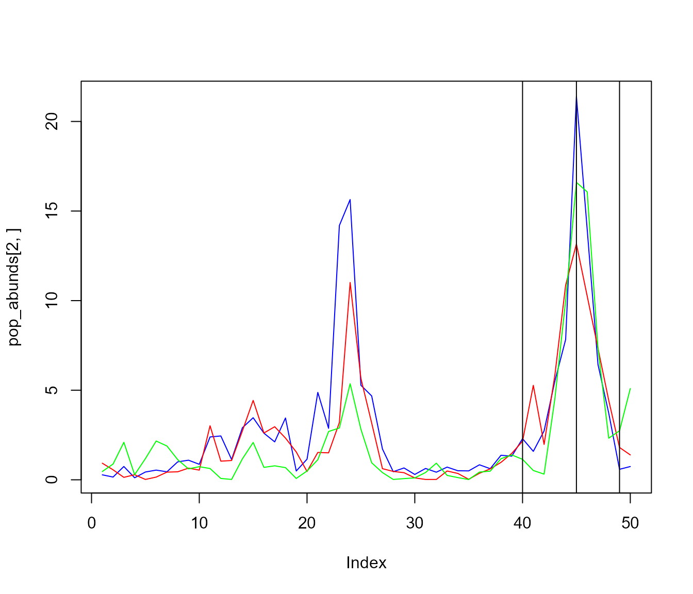
## save for later use
#write_rds(pop_abunds, "data/pop_abunds.rds")So, that is out pop_abunds. For initial population
states we are going to base it on data from 2008, which is the third
sampling date, and which corresponds to what we think is a panmictic
population, which is just after, but not during the big rainfall event.
We will get the initial population sizes from here, as well as our
starting population data. Our initial population sizes need to be based
on this (rather than our abundance data we just generated above),
because the number of individuals at the start of our simulation must
match the number in the starting population data. The population will
then be immediately adjusted to our desired population size by
essentially drawing offspring from our smaller starting population pool.
This should give us populations with SNP frequencies resembling our
actual data at the start of the simulation.
## extract 2008 data
gen_2008 <- gen[gen@other$ind.metrics$year == 2008, ]
## count number of individuals in genetic sample per subpopulation
init_popsize <- c(table(pop(gen_2008)))
## set filename to be used for starting pop data (using slim_file to make sure SLiM can find it)
starting_pop = tempfile(fileext = ".txt") %>%
slim_file()
## setup generations to sample
## we will just sample the three years corresponding to the data, but do it during the last 6 cycles, as "technical" replicates
sample_these <- purrr::map(c(14:19),
~50*.x + sample_times) %>%
purrr::reduce(union)
## save for later
#write_rds(sample_these, "data/sample_these.rds")
#write_rds(init_popsize, "data/init_popsize.rds")Okay, now we are ready to use slim_script_render to
generate a script we can run. The first thing we can try is to render
the script without providing a template. Since we have provided defaults
for all of our templated variables, this should generate a script with
the default values (our ‘default’ script).
script_def <- slim_script_render(pop_sim)## Warning: Warning: A templated variable was not specified in the template and has been replaced by its default value.
script_def## <slimr_script[5]>
## block_init:initialize() {
## setSeed(12345);
## initializeMutationRate(1e-06);
## initializeMutationType("m1", 0.5, "n", 0, 0.1);
## initializeGenomicElementType("g1", m1, 1);
## initializeGenomicElement(g1, 0, 3e+05 - 1);
## initializeRecombinationRate(1e-08);
## initializeSex("A");
## defineConstant("abund", {. = matrix(c(0.926, 0.278, 0.463, 0.557, 0.153, ...), nrow = 3, ncol = 50)});
## defineConstant("sample_these", {. = c(740, 745, 749, 790, 795, 799, 840, 845, 849, 890, ...)});
## }
##
## block_2:1 early() {
## init_pop = {. = c(7, 13, 13)}
## sim.addSubpop("p1", asInteger(init_pop[0]));
## sim.addSubpop("p2", asInteger(init_pop[1]));
## sim.addSubpop("p3", asInteger(init_pop[2]));
## }
##
## block_3:1 late() {
## sim.readFromPopulationFile({. = "F:\\Rtemp\\RtmpEdD9Oa\\file722438057426.txt"});
## p1.tag = 0;
## p2.tag = 0;
## p3.tag = 0;
## }
##
## block_4:1:1000 late() {
## gen = sim.cycle%%50;
## if (gen == 0) {
## gen = 50;
## }
## p1.setSubpopulationSize(asInteger(ceil(abund[0, gen - 1] * 100)));
## p2.setSubpopulationSize(asInteger(ceil(abund[1, gen - 1] * 100)));
## p3.setSubpopulationSize(asInteger(ceil(abund[2, gen - 1] * 100)));
## if (p1.tag == 0 & abund[0, gen - 1] > 5) {
## p2.setMigrationRates(p1, 0);
## p3.setMigrationRates(p1, 0);
## p1.tag = 1;
## }
## if (p1.tag == 1 & abund[0, gen - 1] <= 5) {
## p2.setMigrationRates(p1, 0);
## p3.setMigrationRates(p1, 0);
## p1.tag = 0;
## }
## if (p2.tag == 0 & abund[1, gen - 1] > 5) {
## p1.setMigrationRates(p2, 0);
## p3.setMigrationRates(p2, 0);
## p2.tag = 1;
## }
## if (p2.tag == 1 & abund[1, gen - 1] <= 5) {
## p1.setMigrationRates(p2, 0);
## p3.setMigrationRates(p2, 0);
## p2.tag = 0;
## }
## if (p3.tag == 0 & abund[2, gen - 1] > 5) {
## p1.setMigrationRates(p3, 0);
## p2.setMigrationRates(p3, 0);
## p3.tag = 1;
## }
## if (p3.tag == 1 & abund[2, gen - 1] <= 5) {
## p1.setMigrationRates(p3, 0);
## p2.setMigrationRates(p3, 0);
## p3.tag = 0;
## }
## }
##
## block_5:1000 late() {
## {sim.outputFull() -> full_output}
## }Okay, so now we can see that we have an indication that our R objects will be inserted into the SLiM script. We can try and run this in SLiM now, but we will get an error:
test <- slim_run(script_def)##
##
## Simulation finished with exit status: 1## Warning:
## Failed! Error:## ERROR (Species::InitializePopulationFromFile): initialization file does not exist or is empty.
##
## Error on script line 26, character 8:
##
## sim.readFromPopulationFile("F:\\Rtemp\\RtmpEdD9Oa\\file722438057426.txt");
## ^^^^^^^^^^^^^^^^^^^^^^This is because the starting_pop.txt doesn’t exist yet,
and SLiM has thrown an error telling us this (which slimr passes from
SLiM to us through the R console). Let’s create the initial population
file using slim_make_pop_init. We need to pass this
function either a genlight or a SNP matrix. Since our
genlight object has some missing values, and SLiM cannot
handle missing values, we will first convert to a SNP matrix, and then
fill-in missing values by interpolation. Essentially we just fill-in
missing values randomly with a draw from a binomial distribution.
## int [1:33, 1:39978] 0 0 0 0 0 0 0 0 0 0 ...
## - attr(*, "dimnames")=List of 2
## ..$ : chr [1:33] "P_herm_281" "P_herm_289" "P_herm_297" "P_herm_265" ...
## ..$ : chr [1:39978] "15067413-48-G/A" "15067414-5-C/T" "15067416-63-G/A" "15067419-10-G/C" ...
## replace NAs
nas <- apply(snp_mat, 2, function(x) !any(!is.finite(x)))
snp_mat[ , !nas] <- apply(snp_mat[ , !nas], 2, function(x) {
tab <- table(x[is.finite(x)]);
x[!is.finite(x)] <- as.integer(sample(names(tab), sum(!is.finite(x)), replace = TRUE, prob = tab / sum(tab)));
x
})
glimpse(snp_mat)## int [1:33, 1:39978] 0 0 0 0 0 0 0 0 0 0 ...
## - attr(*, "dimnames")=List of 2
## ..$ : chr [1:33] "P_herm_281" "P_herm_289" "P_herm_297" "P_herm_265" ...
## ..$ : chr [1:39978] "15067413-48-G/A" "15067414-5-C/T" "15067416-63-G/A" "15067419-10-G/C" ...Then, we make our starting population file!
sexes <- as.character(gen_2008@other$ind.metrics$Sex)
## sex ratio of sample is skewed to female, so replace actually sexes with extra males
## otherwise simulation crashes because it is unable to sample enough females? Need
## to look more into this bug.
sexes[pop(gen_2008) == "BL"] <- c("M", "F")## Warning in sexes[pop(gen_2008) == "BL"] <- c("M", "F"): number of items to
## replace is not a multiple of replacement length## Warning in sexes[pop(gen_2008) == "BR"] <- c("M", "F"): number of items to
## replace is not a multiple of replacement length## Warning in sexes[pop(gen_2008) == "TR"] <- c("M", "F"): number of items to
## replace is not a multiple of replacement length
## now make initial population file
slim_make_pop_input(snp_mat, starting_pop, ## filename
sim_gen = 1, ## set generation to first generation
ind_pops = gen_2008@other$ind.metrics$three_pop, ## use subpops
ind_sex = sexes, ## set sexes
## random positions:
mut_pos = sample.int(default_genome_size - 1, nLoc(gen_2008)),
version = 3)## [1] "F:\\Rtemp\\RtmpEdD9Oa\\file722438057426.txt"
## look at the first 50 line to see if it worked:
read_lines(starting_pop) %>%
head(50)## [1] "#OUT 1 A" "Version: 3"
## [3] "Populations:" "p1 7 S 0.42857142857142855"
## [5] "p2 13 S 0.46153846153846156" "p3 13 S 0.46153846153846156"
## [7] "Mutations:" "0 0 m1 117793 0 0.5 p1 1 2"
## [9] "1 1 m1 166306 0 0.5 p1 1 9" "2 2 m1 230205 0 0.5 p1 1 4"
## [11] "3 3 m1 9509 0 0.5 p1 1 14" "4 4 m1 47183 0 0.5 p1 1 8"
## [13] "5 5 m1 42660 0 0.5 p1 1 4" "6 6 m1 179506 0 0.5 p1 1 4"
## [15] "7 7 m1 202318 0 0.5 p1 1 5" "8 8 m1 84153 0 0.5 p1 1 2"
## [17] "9 9 m1 108690 0 0.5 p1 1 3" "10 10 m1 160149 0 0.5 p1 1 6"
## [19] "11 11 m1 161502 0 0.5 p1 1 16" "12 12 m1 122621 0 0.5 p1 1 25"
## [21] "13 13 m1 22539 0 0.5 p1 1 2" "14 14 m1 131828 0 0.5 p1 1 1"
## [23] "15 15 m1 256203 0 0.5 p1 1 66" "16 16 m1 241478 0 0.5 p1 1 3"
## [25] "17 17 m1 206033 0 0.5 p1 1 66" "18 18 m1 14002 0 0.5 p1 1 1"
## [27] "19 19 m1 164031 0 0.5 p1 1 62" "20 20 m1 41191 0 0.5 p1 1 12"
## [29] "21 21 m1 8677 0 0.5 p1 1 15" "22 22 m1 94041 0 0.5 p1 1 64"
## [31] "23 23 m1 148047 0 0.5 p1 1 8" "24 24 m1 96155 0 0.5 p1 1 2"
## [33] "25 25 m1 25365 0 0.5 p1 1 3" "26 26 m1 196396 0 0.5 p1 1 14"
## [35] "27 27 m1 100302 0 0.5 p1 1 18" "28 28 m1 209291 0 0.5 p1 1 1"
## [37] "29 29 m1 207284 0 0.5 p1 1 2" "30 30 m1 6485 0 0.5 p1 1 1"
## [39] "31 31 m1 178114 0 0.5 p1 1 8" "32 32 m1 186245 0 0.5 p1 1 3"
## [41] "33 33 m1 174584 0 0.5 p1 1 65" "34 34 m1 66593 0 0.5 p1 1 1"
## [43] "35 35 m1 150064 0 0.5 p1 1 1" "36 36 m1 163884 0 0.5 p1 1 19"
## [45] "37 37 m1 257974 0 0.5 p1 1 11" "38 38 m1 287205 0 0.5 p1 1 18"
## [47] "39 39 m1 130973 0 0.5 p1 1 4" "40 40 m1 216234 0 0.5 p1 1 63"
## [49] "41 41 m1 280741 0 0.5 p1 1 11" "42 42 m1 106279 0 0.5 p1 1 8"And now we can try running our simulation:
res <- slim_run(script_def, throw_error = TRUE)##
##
## Simulation finished with exit status: 0
##
## Success!Okay, so now we have a working simulation! We’ve currently just
output the full population information at the end of the simulation,
which doesn’t give us too much information about our question, but just
to convince ourselves the simulation produced genetic information, we
can extract our output as a genlight object and plot it.
Note: The conversion can take awhile.
pop_res <- slimr::slim_extract_genlight(res, "full_output")
## reorder by subpop
pop_res <- pop_res[order(pop(pop_res)), ]
plot(pop_res)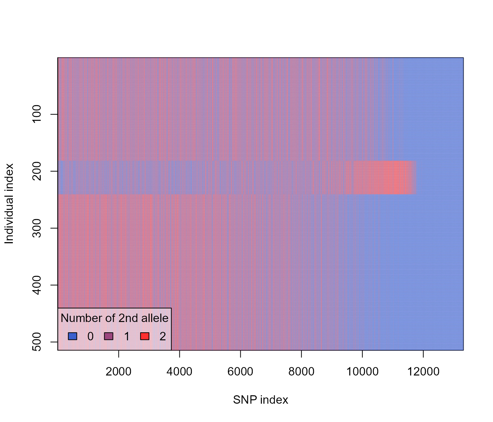
So this shows that our three populations are characterized by mostly non-overlapping fixed mutations. This makes sense since our default parameters specified some selection, and no migration. Mutation with positive selection coefficients would have sweeped to fixation, and the lack of migration between subpopulation means that each subpopulation is likely to have had a different set of mutations go to fixation, and no way for these to then spread to other subpopulations.
Okay, to get an idea of what sort of dynamics of Fst we will get with
different versions of this simulation, let’s create a version where we
calculate Fst during the simulation, and output it for tracking. Then we
can make some time-series plots. When it comes to comparing simulation
outputs to our actual data we will make yet another version where we
will only output just before, during, and just after the population
explosions corresponding to rainfall. To add a Fst calculation to our
simulation we will use the slim_function function, which
allows you to specify a SLiM function to use in your SLiM code. This Fst
function is based on the one described in the SLiM manual, and can also
be found online here: https://github.com/MesserLab/SLiM-Extras/blob/master/functions/calcFST.txt.
We have already used the function as an R function when we calculated
Fst for our observed data. Now we can convert it to a SLiM function.
slim_function requires us to specify the function arguments
and the function names as character strings, and then the body of the
function as slimr code. If inserted into a
slim_script call, the function will then be accessible
inside the rest of the code in the slim_script call. We can
use the previously specified R function code body by simply extracting
it using rlang::fn_body(). We also need to make sure it is
evaluated before insertion, which we assure using the evaluation forcing
operator !!.
Note: The latest version of SLiM (v4.1), which was released
after the initial version of this vignette was written, now has a
built-in function called calcFST, which means we
technically no longer need to use a custom function for this
functionality. However, we have kept this section of the vignette to
show how custom functions can be specified and used in
slimr.
slim_script(
slim_function("o<Subpopulation>$ subpop1", "o<Subpopulation>$ subpop2",
name = "calculateFST",
return_type = "f$", body = calculateFST),
slim_block(initialize(), {
setSeed(12345);
initializeMutationRate(slimr_template("mut_rate", 1e-6));
initializeMutationType("m1", 0.5, "n", 0, slimr_template("selection_strength", 0.1));
initializeGenomicElementType("g1", m1, 1.0);
initializeGenomicElement(g1, 0, slimr_template("genome_size", !!default_genome_size) - 1);
initializeRecombinationRate(slimr_template("recomb_rate", 1e-8));
initializeSex("A");
defineConstant("abund", slimr_inline(pop_abunds, delay = TRUE));
defineConstant("sample_these", slimr_inline(sample_these, delay = TRUE));
}),
slim_block(1, {
init_pop = slimr_inline(init_popsize, delay = TRUE)
## set populations to initial size
sim.addSubpop("p1", asInteger(init_pop[0]));
sim.addSubpop("p2", asInteger(init_pop[1]));
sim.addSubpop("p3", asInteger(init_pop[2]));
}),
slim_block(1, late(), {
## get starting population from a file which we will fill-in later
sim.readFromPopulationFile(slimr_inline(starting_pop, delay = TRUE));
## migration on or off flags for pops 1-3 (using tag)
p1.tag = 0;
p2.tag = 0;
p3.tag = 0;
}),
slim_block(1, 1000, late(), {
## update generation number
## note in SLiM versions < 4.0, this would be sim.generation instead
gen = sim.cycle %% 50
if(gen == 0) {
gen = 50
}
## set population size to observed levels
p1.setSubpopulationSize(asInteger(ceil(abund[0, gen - 1] * slimr_template("popsize_scaling", 100))));
p2.setSubpopulationSize(asInteger(ceil(abund[1, gen - 1] * ..popsize_scaling..)));
p3.setSubpopulationSize(asInteger(ceil(abund[2, gen - 1] * ..popsize_scaling..)));
## increase migration when above abundance threshold
if(p1.tag == 0 & abund[0, gen - 1] > slimr_template("abund_threshold", 5)) {
p2.setMigrationRates(p1, slimr_template("migration_rate", 0))
p3.setMigrationRates(p1, ..migration_rate..)
p1.tag = 1;
}
if(p1.tag == 1 & abund[0, gen - 1] <= ..abund_threshold..) {
p2.setMigrationRates(p1, 0)
p3.setMigrationRates(p1, 0)
p1.tag = 0;
}
if(p2.tag == 0 & abund[1, gen - 1] > ..abund_threshold..) {
p1.setMigrationRates(p2, ..migration_rate..)
p3.setMigrationRates(p2, ..migration_rate..)
p2.tag = 1;
}
if(p2.tag == 1 & abund[1, gen - 1] <= ..abund_threshold..) {
p1.setMigrationRates(p2, 0)
p3.setMigrationRates(p2, 0)
p2.tag = 0;
}
if(p3.tag == 0 & abund[2, gen - 1] > ..abund_threshold..) {
p1.setMigrationRates(p3, ..migration_rate..)
p2.setMigrationRates(p3, ..migration_rate..)
p3.tag = 1;
}
if(p3.tag == 1 & abund[2, gen - 1] <= ..abund_threshold..) {
p1.setMigrationRates(p3, 0)
p2.setMigrationRates(p3, 0)
p3.tag = 0;
}
## output Fst
slimr_output(c(calculateFST(p1, p2), calculateFST(p1, p3), calculateFST(p2, p3)), "fsts");
}),
slim_block(1000, late(), {
sim.simulationFinished()
})
) -> pop_sim_fstNow let’s run that for our defaults to see how it works.
fst_script <- slim_script_render(pop_sim_fst)## Warning: Warning: A templated variable was not specified in the template and has been replaced by its default value.
fst_res <- slim_run(fst_script, throw_error = TRUE)##
##
## Simulation finished with exit status: 0
##
## Success!So now we can have a look at how the Fst data was returned, which is
the default way slimr returns data that is a vector:
fst_res$output_data## # A tibble: 1,000 × 5
## generation name expression type data
## <int> <chr> <chr> <chr> <chr>
## 1 1 fsts c(calculateFST(p1, p2), calculateFST(p1, p3), c… "flo… 0.04…
## 2 2 fsts c(calculateFST(p1, p2), calculateFST(p1, p3), c… "flo… 0.04…
## 3 3 fsts c(calculateFST(p1, p2), calculateFST(p1, p3), c… "flo… 0.05…
## 4 4 fsts c(calculateFST(p1, p2), calculateFST(p1, p3), c… "flo… 0.05…
## 5 5 fsts c(calculateFST(p1, p2), calculateFST(p1, p3), c… "flo… 0.06…
## 6 6 fsts c(calculateFST(p1, p2), calculateFST(p1, p3), c… "flo… 0.09…
## 7 7 fsts c(calculateFST(p1, p2), calculateFST(p1, p3), c… "flo… 0.10…
## 8 8 fsts c(calculateFST(p1, p2), calculateFST(p1, p3), c… "flo… 0.11…
## 9 9 fsts c(calculateFST(p1, p2), calculateFST(p1, p3), c… "flo… 0.11…
## 10 10 fsts c(calculateFST(p1, p2), calculateFST(p1, p3), c… "flo… 0.11…
## # ℹ 990 more rows
typeof(fst_res$output_data$data)## [1] "character"So it is currently in the form of a character vector separated by
spaces. This is pretty straightforward to extract, so let’s do it
(Note: slimr has the ability to automatically
convert this output to more user friendly form, but here we will do it
the hard way to show how you can flexibly extract different kinds of
data, even if a built-in slimr function doesn’t exist to
handle the type of output you want).
extract_fst <- function(fst_res) {
fst_dat <- fst_res$output_data %>%
dplyr::select(generation, data) %>%
dplyr::mutate(data = str_split(data, " ")) %>%
tidyr::unnest_longer(data, values_to = "fst", indices_to = "index") %>%
dplyr::mutate(fst = as.numeric(fst), `subpop\npair` = c("BL-BR", "BL-TR", "BR-TR")[index])
fst_dat
}
fst_dat <- extract_fst(fst_res)
ggplot(fst_dat, aes(generation, fst)) +
geom_path(aes(colour = `subpop\npair`)) +
scale_y_sqrt() +
ggforce::facet_zoom(x = generation > 750 & generation < 1000,
y = fst > 0.1,
horizontal = FALSE,
zoom.size = 1)We can see that pairwise Fst rapidly increases between all three subpopulations, reaching nearly its theoretical maximum of 1.0, and then periodically dipping slightly. Let’s look at how this equilibrium pattern corresponds with population sizes. We will look at mean population size and mean Fst.
pop_mean <- apply(pop_abunds, 2, mean) %>%
rep(length.out = n_distinct(fst_dat$generation)) * 100 ## don't forget popsize_scaling
plot_cycle <- function(fst_dat, pop_mean) {
fst_pop <- fst_dat %>%
dplyr::group_by(generation) %>%
dplyr::summarise(fst = mean(fst),
.groups = "drop") %>%
dplyr::mutate(popsize = pop_mean) %>%
dplyr::filter(generation > 750) ## only take data after equilibrium reached
ggplot(fst_pop, aes(popsize, fst)) +
geom_path(aes(colour = generation),
arrow = arrow(length = unit(0.15, "cm"), type = "closed"),
alpha = 0.5) +
annotate("point", x = fst_pop$popsize[1], fst_pop$fst[1], colour = "red", size = 2) +
scale_x_log10() +
scale_colour_viridis_c() +
theme_minimal()
}
plot_cycle(fst_dat, pop_mean)The plot above shows how Fst and population size are changing through time together for 250 generations (the red dot is the starting point at generation 750). It appears that as population size begins increasing the Fst begins to drop slightly. This drop in Fst continues even as population size begins to decrease again (a lag effect?), then Fst suddenly increases back to nearly 1.0 as population size reaches a low. I suspect this pattern is due to ephemeral effects of increased efficiency of selection when population size is high. As new mutations begin sweeping to fixation there is an intermediate period where they are at intermediate frequency – this has the tendency to lead to reductions in within-population heterozygosity (relative to total heterozygosity), and leads to the subpopulation becoming slightly more similar due to chance collisions between genes being selected in both populations.
Due to overplotting however, some of the details of the plot may be
difficult to see. Instead let’s use gganimate to create an
animated version that might show the dynamics a bit better.
animate_cycle <- function(fst_dat, pop_mean) {
fst_pop <- fst_dat %>%
dplyr::group_by(generation) %>%
dplyr::summarise(fst = mean(fst), .groups = "drop") %>%
dplyr::mutate(popsize = pop_mean) %>%
dplyr::filter(generation > 250)
anim <- ggplot(fst_pop, aes(popsize, fst)) +
geom_point() +
scale_x_log10() +
transition_reveal(generation) +
shadow_wake(0.02, falloff = "sine-in") +
ggtitle("Generation: {frame_along}") +
theme_minimal()
animate(anim, nframes = n_distinct(fst_pop$generation) * 5, fps = 30,
start_pause = 10, end_pause = 10, renderer = gifski_renderer())
}
animate_cycle(fst_dat, pop_mean)
The above animation shows 750 generations of the dynamics, with the black dot showing the position of the population in terms of the mean population size, and the mean pairwise Fst, at different time points. We can clearly see the cycles occurring and its direction.
In any event, this is obviously a pretty unrealistic scenario, and it
bears little resemblance to what is happening in our actual data. So,
let us try a few other sets of parameters, and see if we can get
something closer to what we observe in our data. Now we can finally see
how we specify non-default values to our templated variables using
slim_script_render. Let’s start by changing the
migration_rate parameter, which controls how much migration
we get between subpopulations when they go over their threshold
population size. Let’s set it to maximum migration (0.5) – this model is
similar to our hypothesis for the pattern we see. We will also set
selection to practically zero, so we can isolate drift as a mechanism.
We set a parameter value in our script like this:
## set migration rate to 0.5 (maximum migration, e.g. 50% of population switches place)
## population will become panmictic over a certain popsize threshold
fst_script_2 <- slim_script_render(pop_sim_fst, template = list(migration_rate = 0.5,
selection_strength = 1e-12))## Warning: Warning: A templated variable was not specified in the template and has been replaced by its default value.
## now run the sim and show plots of results
fst_res_2 <- slim_run(fst_script_2, throw_error = TRUE)##
##
## Simulation finished with exit status: 0
##
## Success!
fst_dat_2 <- extract_fst(fst_res_2)
ggplot(fst_dat_2, aes(generation, fst)) +
geom_path(aes(colour = `subpop\npair`)) +
scale_y_sqrt() +
ggforce::facet_zoom(x = generation > 750 & generation < 1000,
y = fst < 0.5,
horizontal = FALSE,
zoom.size = 1)
plot_cycle(fst_dat_2, pop_mean)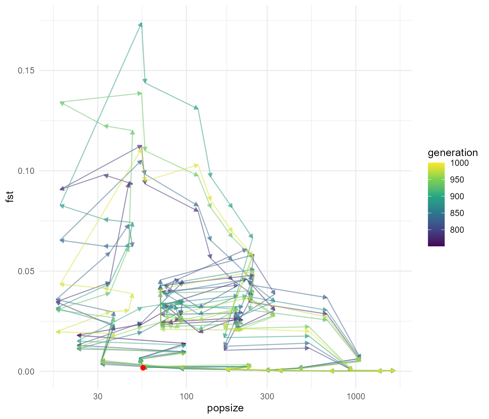
animate_cycle(fst_dat_2, pop_mean)
This shows a very distinct pattern relative to our last run. Now we see that Fst tends to be very low, particularly when population sizes are high (e.g. when migration is “turned on”), as expected. Fst increases in the intervening periods of low population size, which can only be explained by drift. Our Fst values are closer to the magnitude of values we see in our data, which max out at around 0.05, though they still tend to be much higher in this simulation overall.
Let’s try one more scenario before we attempt to more formally
compare the simulations to our data. Let’s set our
abund_threshold controlling at what population size the
subpopulation begins exchanging individuals to zero. This means that
migration will be on all the time. We will also increase selection.
fst_script_3 <- slim_script_render(pop_sim_fst, template = list(migration_rate = 0.5,
selection_strength = 0.2,
abund_threshold = 0))## Warning: Warning: A templated variable was not specified in the template and has been replaced by its default value.
fst_res_3 <- slim_run(fst_script_3, throw_error = TRUE)##
##
## Simulation finished with exit status: 0
##
## Success!
fst_dat_3 <- extract_fst(fst_res_3)
ggplot(fst_dat_3, aes(generation, fst)) +
geom_path(aes(colour = `subpop\npair`)) +
scale_y_sqrt() +
ggforce::facet_zoom(x = generation > 750 & generation < 1000,
y = fst < 0.2,
horizontal = FALSE,
zoom.size = 1)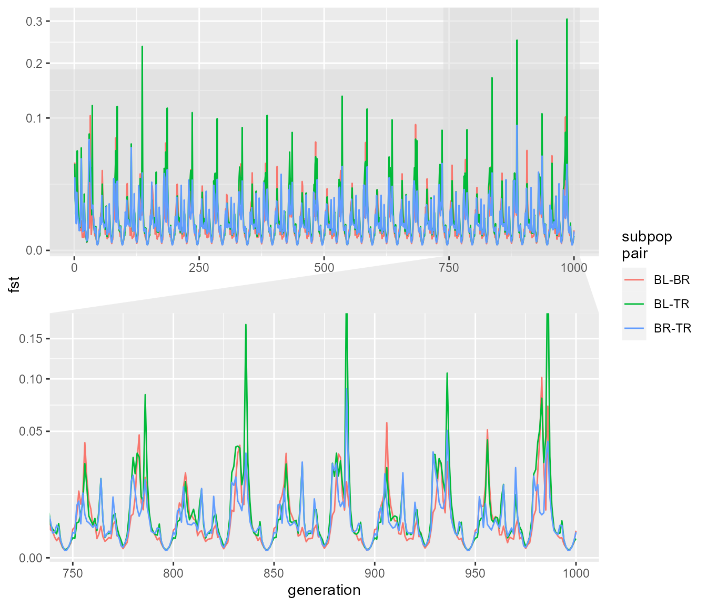
plot_cycle(fst_dat_3, pop_mean)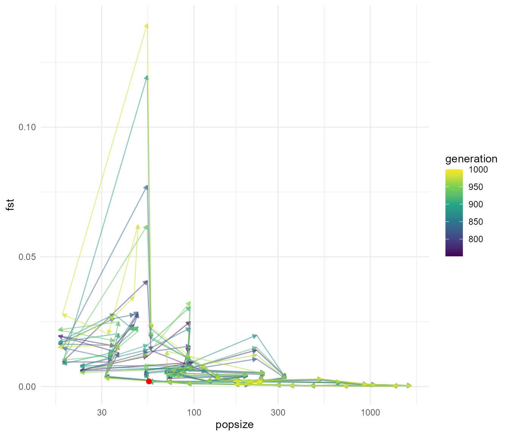
animate_cycle(fst_dat_3, pop_mean)
We can again see that we get rapid fluctuations in Fst relating to changes in population size. Here they are a bit more rapid but don’t reach the same extremes of Fst. The fluctuations presumably still occur because at very low population size, drift still allows the subpopulations to drift apart due to chance alone, even though they are panmictic (in other words, if you choose any two random subsets of individuals you would expect a higher pairwise Fst during times of low population size). Before we move on, what happens if we reduce the migration rate with an abundance threshold:
fst_script_4 <- slim_script_render(pop_sim_fst, template = list(migration_rate = 0.2,
selection_strength = 1e-12,
abund_threshold = 5))## Warning: Warning: A templated variable was not specified in the template and has been replaced by its default value.
fst_res_4 <- slim_run(fst_script_4, throw_error = TRUE)##
##
## Simulation finished with exit status: 0
##
## Success!
fst_dat_4 <- extract_fst(fst_res_4)
ggplot(fst_dat_4, aes(generation, fst)) +
geom_path(aes(colour = `subpop\npair`)) +
scale_y_sqrt() +
ggforce::facet_zoom(x = generation > 750 & generation < 1000,
y = fst < 0.2,
horizontal = FALSE,
zoom.size = 1)
plot_cycle(fst_dat_4, pop_mean)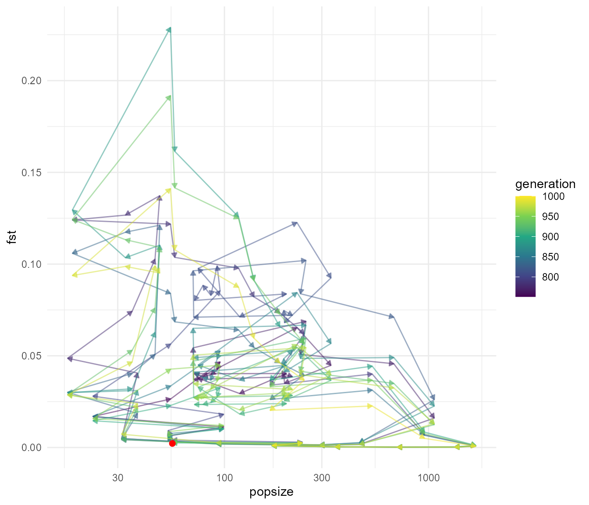
animate_cycle(fst_dat_4, pop_mean)
Again we see those fluctuations. All in all, this suggests that it is likely to be difficult to distinguish what processes are driving the pattern of Fst we see in our study. There clearly are some differences in the details of the dynamics, particularly when you compare our cycle plots between the different scenarios. However, we only have three years of data, just spanning a rainfall (or population explosion) event, which means considerably less information to go on. It looks like it is going to be difficult to disentangle the effects of migration from just the effects of population size, which is perhaps not surprising, given that these two factors are linked in our model (e.g. our hypothesis is that migration increases with high rainfall, which also is linked with population increases). Unfortunately the two processes have a similar effect on Fst, migration creates gene flow which reduces population differentiation, but increasing population increases effective population size, and thus reducing the strength of drift relative to selection, me
So the next thing we should do is get our simulation to output data we can compare directly to our data. In this case we will just output full population information at several time points, and calculate Fst post-hoc using our custom R function to make sure that our methods of calculating Fst are the same. We will also sample the subpopulations in our simulation to try and match sample size with our real data as well.
samp_sizes <- table(gen$other$ind.metrics$three_pop, gen$other$ind.metrics$year)
samp_sizes <- do.call(cbind, replicate(6, samp_sizes, simplify = FALSE))
## save for later
#write_rds(samp_sizes, "data/samp_sizes.rds")
slim_script(
slim_block(initialize(), {
#setSeed(12345); don't want to set the seed because we want diff each time
#initializeSLiMOptions(keepPedigrees=T);
initializeMutationRate(slimr_template("mut_rate", 1e-6));
initializeMutationType("m1", 0.5, "n", 0, slimr_template("selection_strength", 0.1));
initializeGenomicElementType("g1", m1, 1.0);
initializeGenomicElement(g1, 0, slimr_template("genome_size", !!default_genome_size) - 1);
initializeRecombinationRate(slimr_template("recomb_rate", 1e-8));
initializeSex("A");
defineConstant("abund", slimr_inline(pop_abunds, delay = FALSE));
defineConstant("sample_these", slimr_inline(sample_these, delay = FALSE));
defineConstant("samp_sizes", slimr_inline(samp_sizes, delay = FALSE));
}),
slim_block(1, {
init_pop = slimr_inline(init_popsize, delay = TRUE)
## set populations to initial size
sim.addSubpop("p1", asInteger(init_pop[0]));
sim.addSubpop("p2", asInteger(init_pop[1]));
sim.addSubpop("p3", asInteger(init_pop[2]));
}),
slim_block(1, late(), {
## get starting population from a file which we will fill-in later
sim.readFromPopulationFile(slimr_inline(starting_pop, delay = TRUE));
## migration on or off flags for pops 1-3 (using tag)
p1.tag = 0;
p2.tag = 0;
p3.tag = 0;
}),
slim_block(1, 1000, late(), {
## update generation number
## note in SLiM versions < 4.0, this would be sim.generation instead
gen = sim.cycle %% 50
if(gen == 0) {
gen = 50
}
## set population size to observed levels
p1.setSubpopulationSize(asInteger(ceil(abund[0, gen - 1] * slimr_template("popsize_scaling", 100))));
p2.setSubpopulationSize(asInteger(ceil(abund[1, gen - 1] * ..popsize_scaling..)));
p3.setSubpopulationSize(asInteger(ceil(abund[2, gen - 1] * ..popsize_scaling..)));
## increase migration when above abundance threshold
if(p1.tag == 0 & abund[0, gen - 1] > slimr_template("abund_threshold", 5)) {
p2.setMigrationRates(p1, slimr_template("migration_rate", 0))
p3.setMigrationRates(p1, ..migration_rate..)
p1.tag = 1;
}
if(p1.tag == 1 & abund[0, gen - 1] <= ..abund_threshold..) {
p2.setMigrationRates(p1, 0)
p3.setMigrationRates(p1, 0)
p1.tag = 0;
}
if(p2.tag == 0 & abund[1, gen - 1] > ..abund_threshold..) {
p1.setMigrationRates(p2, ..migration_rate..)
p3.setMigrationRates(p2, ..migration_rate..)
p2.tag = 1;
}
if(p2.tag == 1 & abund[1, gen - 1] <= ..abund_threshold..) {
p1.setMigrationRates(p2, 0)
p3.setMigrationRates(p2, 0)
p2.tag = 0;
}
if(p3.tag == 0 & abund[2, gen - 1] > ..abund_threshold..) {
p1.setMigrationRates(p3, ..migration_rate..)
p2.setMigrationRates(p3, ..migration_rate..)
p3.tag = 1;
}
if(p3.tag == 1 & abund[2, gen - 1] <= ..abund_threshold..) {
p1.setMigrationRates(p3, 0)
p2.setMigrationRates(p3, 0)
p3.tag = 0;
}
## only run if the generation (cycle) is in our sample_these list
## note in SLiM versions < 4.0, this would be sim.generation instead of sim.cycle
if(any(match(sample_these, sim.cycle) >= 0)) {
## find the sample size that matches the matching "year" for our obs data
ssizes = drop(samp_sizes[ , which(sample_these == sim.cycle)])
## sample individuals
ind_sample = c(sample(p1.individuals, ssizes[0]),
sample(p2.individuals, ssizes[1]),
sample(p3.individuals, ssizes[2]))
## output individuals genomes
slimr_output(ind_sample.genomes.output(), "pop_sample", do_every = 1);
slimr_output(ind_sample.genomes.individual.subpopulation, "subpops", do_every = 1)
}
}),
slim_block(1000, late(), {
sim.simulationFinished()
})
) -> pop_sim_sampLet’s give it a try! Here we will demonstrate another feature of
slimr. By specifying a reps argument to
slim_script_render we can generate replicate simulations.
This returns a slimr_script_coll object, which stands for
slimr script collection. This can be run using slim_run
just like a regular slimr_script, but each simulation in
the collection will be run, either sequentially, or in parallel,
depending on what argument we use. We will run in parallel on 6 cores,
and run 6 replicates of our entire simulation, with the same parameters.
So then we will have 6 replicate samples within each simulation and 6
replicate simulation for a total of 36 replicates for each of our 3
sampling time points.
To run in parallel we must first set a plan for the package future, which slimr uses under the hood for parallelism:
plan(multisession(workers = 6))Now we can run our script!
samp_script <- slim_script_render(pop_sim_samp, template = list(migration_rate = 0.5,
selection_strength = 1e-12,
abund_threshold = 0),
reps = 6)## Warning: Warning: A templated variable was not specified in the template and has been replaced by its default value.
samp_res <- slim_run(samp_script, throw_error = TRUE,
parallel = TRUE)Just to confirm we sampled the generations we wanted:
unique(samp_res[[1]]$output_data$generation)## [1] 740 745 749 790 795 799 840 845 849 890 895 899 940 945 949 990 995 999
sample_these## [1] 740 745 749 790 795 799 840 845 849 890 895 899 940 945 949 990 995 999The last step is to take the output of the simulation, convert it
into a set of genlight objects, and then calculate Fst on
those using the same function used to calculate Fst for our real data.
Then we can plot a distribution of expected Fst values at our three time
points based on this simulation, and compare that with our real data. We
can convert the genomic information to genlight using
slim_extract_genlight(). By specifying the
name argument, slim_extract_genlight() will
only use rows with that name. Additionally we can create a separate
genlight for each generation sample by using the by
argument, like this:
slim_genlights <- slim_extract_genlight(samp_res[[1]], name = "pop_sample",
by = "generation")
slim_genlights## # A tibble: 18 × 2
## generation genlight
## <int> <list>
## 1 740 <genlight[,509]>
## 2 745 <genlight[,750]>
## 3 749 <genlight[,624]>
## 4 790 <genlight[,519]>
## 5 795 <genlight[,754]>
## 6 799 <genlight[,654]>
## 7 840 <genlight[,308]>
## 8 845 <genlight[,525]>
## 9 849 <genlight[,427]>
## 10 890 <genlight[,347]>
## 11 895 <genlight[,550]>
## 12 899 <genlight[,501]>
## 13 940 <genlight[,408]>
## 14 945 <genlight[,652]>
## 15 949 <genlight[,538]>
## 16 990 <genlight[,548]>
## 17 995 <genlight[,810]>
## 18 999 <genlight[,664]>We now have a tibble containing genlight objects for each generation sample. Let’s plot one to make sure it worked.
plot(slim_genlights$genlight[[1]])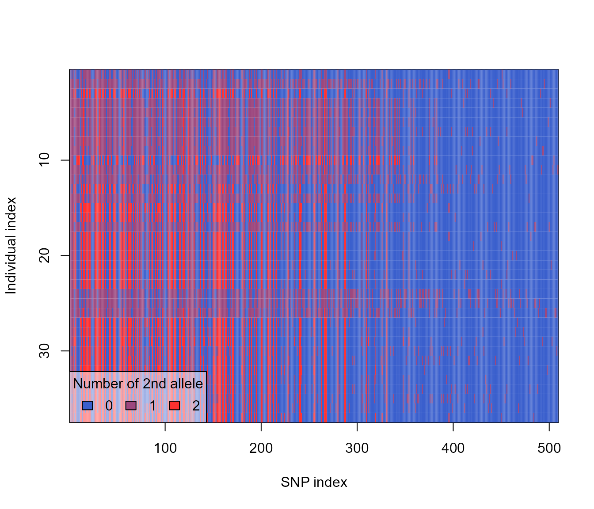
Now because we output a sample of individuals’ genomes in our
simulation, and SLiM doesn’t include information on the subpopulation of
origin in its genome output, we also output the associated subpopulation
for each genome and included it the "subpops" data rows. We
can now extract this and reassociate with the genome data. This is
possible because SLiM always outputs this data in the same order. Note
that we sampled 50 individuals which means we have 100 genomes. These
were reassembled into individuals by
slim_extract_genlight(), and we can likewise aggregate our
subpopulation information by noting that SLiM always outputs the two
genomes from a single individual one after the other. We can use the
slimr function slim_results_to_data() function
which automatically attempts to convert the data stored in our results
object to usable data in the form of a tibble. This also works with
a
slim_subpops <- samp_res[[1]]$output_data %>%
filter(name == "subpops") %>%
slim_results_to_data()
slim_subpops ## # A tibble: 18 × 5
## type expression generation name data
## <chr> <chr> <int> <chr> <lis>
## 1 "object<Subpopulation> [0:73] Subpopulatio… ind_sampl… 740 subp… <chr>
## 2 "object<Subpopulation> [0:155] Subpopulati… ind_sampl… 745 subp… <chr>
## 3 "object<Subpopulation> [0:65] Subpopulatio… ind_sampl… 749 subp… <chr>
## 4 "object<Subpopulation> [0:73] Subpopulatio… ind_sampl… 790 subp… <chr>
## 5 "object<Subpopulation> [0:155] Subpopulati… ind_sampl… 795 subp… <chr>
## 6 "object<Subpopulation> [0:65] Subpopulatio… ind_sampl… 799 subp… <chr>
## 7 "object<Subpopulation> [0:73] Subpopulatio… ind_sampl… 840 subp… <chr>
## 8 "object<Subpopulation> [0:155] Subpopulati… ind_sampl… 845 subp… <chr>
## 9 "object<Subpopulation> [0:65] Subpopulatio… ind_sampl… 849 subp… <chr>
## 10 "object<Subpopulation> [0:73] Subpopulatio… ind_sampl… 890 subp… <chr>
## 11 "object<Subpopulation> [0:155] Subpopulati… ind_sampl… 895 subp… <chr>
## 12 "object<Subpopulation> [0:65] Subpopulatio… ind_sampl… 899 subp… <chr>
## 13 "object<Subpopulation> [0:73] Subpopulatio… ind_sampl… 940 subp… <chr>
## 14 "object<Subpopulation> [0:155] Subpopulati… ind_sampl… 945 subp… <chr>
## 15 "object<Subpopulation> [0:65] Subpopulatio… ind_sampl… 949 subp… <chr>
## 16 "object<Subpopulation> [0:73] Subpopulatio… ind_sampl… 990 subp… <chr>
## 17 "object<Subpopulation> [0:155] Subpopulati… ind_sampl… 995 subp… <chr>
## 18 "object<Subpopulation> [0:65] Subpopulatio… ind_sampl… 999 subp… <chr>
slim_subpops <- slim_subpops %>%
unnest_longer(col = data, values_to = "subpop", indices_to = "genome_num") %>%
mutate(individual_num = c(rep(1:sum(samp_sizes[ , 1]), each = 2),
rep(1:sum(samp_sizes[ , 2]), each = 2),
rep(1:sum(samp_sizes[ , 3]), each = 2)) %>%
rep(6))
slim_subpops## # A tibble: 1,776 × 7
## type expression generation name subpop genome_num individual_num
## <chr> <chr> <int> <chr> <chr> <int> <int>
## 1 "object<Subpopu… ind_sampl… 740 subp… Subpo… 1 1
## 2 "object<Subpopu… ind_sampl… 740 subp… Subpo… 2 1
## 3 "object<Subpopu… ind_sampl… 740 subp… Subpo… 3 2
## 4 "object<Subpopu… ind_sampl… 740 subp… Subpo… 4 2
## 5 "object<Subpopu… ind_sampl… 740 subp… Subpo… 5 3
## 6 "object<Subpopu… ind_sampl… 740 subp… Subpo… 6 3
## 7 "object<Subpopu… ind_sampl… 740 subp… Subpo… 7 4
## 8 "object<Subpopu… ind_sampl… 740 subp… Subpo… 8 4
## 9 "object<Subpopu… ind_sampl… 740 subp… Subpo… 9 5
## 10 "object<Subpopu… ind_sampl… 740 subp… Subpo… 10 5
## # ℹ 1,766 more rows
slim_subpops <- slim_subpops %>%
group_by(generation, individual_num) %>%
summarise(subpop = subpop[1],
.groups = "drop")
slim_subpops## # A tibble: 888 × 3
## generation individual_num subpop
## <int> <int> <chr>
## 1 740 1 Subpopulation<p1>
## 2 740 2 Subpopulation<p1>
## 3 740 3 Subpopulation<p1>
## 4 740 4 Subpopulation<p1>
## 5 740 5 Subpopulation<p1>
## 6 740 6 Subpopulation<p1>
## 7 740 7 Subpopulation<p1>
## 8 740 8 Subpopulation<p1>
## 9 740 9 Subpopulation<p1>
## 10 740 10 Subpopulation<p1>
## # ℹ 878 more rowsOkay, now we can add this to the genlights we generated earlier.
## reorder by individual label
slim_genlights$genlight <- map(slim_genlights$genlight,
~.x[order(as.numeric(.x$ind.names)), ])
## add subpop data
slim_genlights$genlight <- map2(slim_genlights$genlight,
slim_subpops %>%
group_split(generation),
~{pop(.x) <- .y$subpop; .x})Let’s look at that plot again but reordered by population.
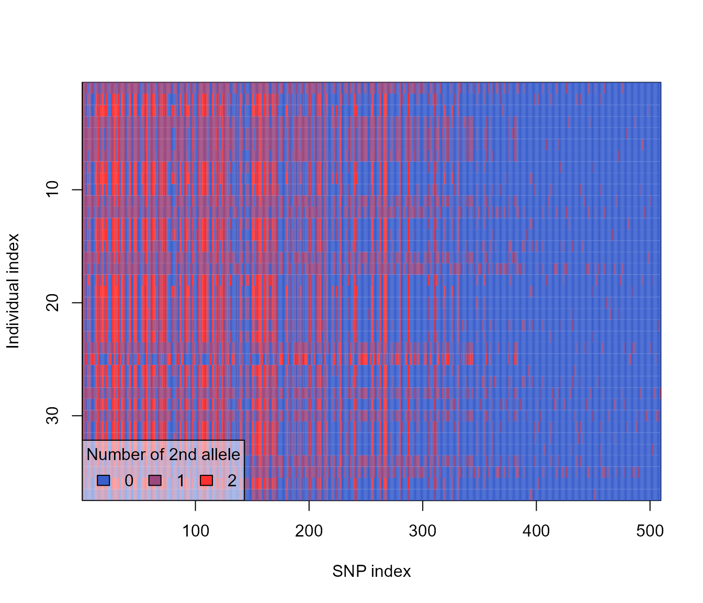
Now we are ready to calculate our pairwise Fsts for each sample.
fst_by_generation_sim <- map(slim_genlights$genlight,
~pairFST(.x) %>%
as.dist() %>%
as.matrix())
names(fst_by_generation_sim) <- slim_genlights$generation
fst_by_generation_sim## $`740`
## Subpopulation<p1> Subpopulation<p2> Subpopulation<p3>
## Subpopulation<p1> 0.000000000 0.006868622 0.01071799
## Subpopulation<p2> 0.006868622 0.000000000 0.01590407
## Subpopulation<p3> 0.010717986 0.015904072 0.00000000
##
## $`745`
## Subpopulation<p1> Subpopulation<p2> Subpopulation<p3>
## Subpopulation<p1> 0.000000000 0.007452122 0.007390905
## Subpopulation<p2> 0.007452122 0.000000000 0.009817015
## Subpopulation<p3> 0.007390905 0.009817015 0.000000000
##
## $`749`
## Subpopulation<p1> Subpopulation<p2> Subpopulation<p3>
## Subpopulation<p1> 0.00000000 0.01224182 0.01722751
## Subpopulation<p2> 0.01224182 0.00000000 0.01584085
## Subpopulation<p3> 0.01722751 0.01584085 0.00000000
##
## $`790`
## Subpopulation<p1> Subpopulation<p2> Subpopulation<p3>
## Subpopulation<p1> 0.000000000 0.008190359 0.02748787
## Subpopulation<p2> 0.008190359 0.000000000 0.02376266
## Subpopulation<p3> 0.027487866 0.023762659 0.00000000
##
## $`795`
## Subpopulation<p1> Subpopulation<p2> Subpopulation<p3>
## Subpopulation<p1> 0.00000000 0.019101570 0.015305827
## Subpopulation<p2> 0.01910157 0.000000000 0.007011274
## Subpopulation<p3> 0.01530583 0.007011274 0.000000000
##
## $`799`
## Subpopulation<p1> Subpopulation<p2> Subpopulation<p3>
## Subpopulation<p1> 0.00000000 0.02937367 0.02953601
## Subpopulation<p2> 0.02937367 0.00000000 0.01304019
## Subpopulation<p3> 0.02953601 0.01304019 0.00000000
##
## $`840`
## Subpopulation<p1> Subpopulation<p2> Subpopulation<p3>
## Subpopulation<p1> 0.00000000 0.01790289 0.03155570
## Subpopulation<p2> 0.01790289 0.00000000 0.04443851
## Subpopulation<p3> 0.03155570 0.04443851 0.00000000
##
## $`845`
## Subpopulation<p1> Subpopulation<p2> Subpopulation<p3>
## Subpopulation<p1> 0.000000000 0.008468425 0.009469408
## Subpopulation<p2> 0.008468425 0.000000000 0.007178540
## Subpopulation<p3> 0.009469408 0.007178540 0.000000000
##
## $`849`
## Subpopulation<p1> Subpopulation<p2> Subpopulation<p3>
## Subpopulation<p1> 0.00000000 0.05451409 0.03534917
## Subpopulation<p2> 0.05451409 0.00000000 0.01496291
## Subpopulation<p3> 0.03534917 0.01496291 0.00000000
##
## $`890`
## Subpopulation<p1> Subpopulation<p2> Subpopulation<p3>
## Subpopulation<p1> 0.00000000 0.01805284 0.06063659
## Subpopulation<p2> 0.01805284 0.00000000 0.09274040
## Subpopulation<p3> 0.06063659 0.09274040 0.00000000
##
## $`895`
## Subpopulation<p1> Subpopulation<p2> Subpopulation<p3>
## Subpopulation<p1> 0.000000000 0.03619680 0.007898948
## Subpopulation<p2> 0.036196796 0.00000000 0.025193171
## Subpopulation<p3> 0.007898948 0.02519317 0.000000000
##
## $`899`
## Subpopulation<p1> Subpopulation<p2> Subpopulation<p3>
## Subpopulation<p1> 0.00000000 0.03030347 0.02855643
## Subpopulation<p2> 0.03030347 0.00000000 0.02647997
## Subpopulation<p3> 0.02855643 0.02647997 0.00000000
##
## $`940`
## Subpopulation<p1> Subpopulation<p2> Subpopulation<p3>
## Subpopulation<p1> 0.00000000 0.01182880 0.02001984
## Subpopulation<p2> 0.01182880 0.00000000 0.02763523
## Subpopulation<p3> 0.02001984 0.02763523 0.00000000
##
## $`945`
## Subpopulation<p1> Subpopulation<p2> Subpopulation<p3>
## Subpopulation<p1> 0.000000000 0.012288572 0.007830131
## Subpopulation<p2> 0.012288572 0.000000000 0.008468013
## Subpopulation<p3> 0.007830131 0.008468013 0.000000000
##
## $`949`
## Subpopulation<p1> Subpopulation<p2> Subpopulation<p3>
## Subpopulation<p1> 0.00000000 0.02418577 0.03688533
## Subpopulation<p2> 0.02418577 0.00000000 0.01777150
## Subpopulation<p3> 0.03688533 0.01777150 0.00000000
##
## $`990`
## Subpopulation<p1> Subpopulation<p2> Subpopulation<p3>
## Subpopulation<p1> 0.00000000 0.02521869 0.03493360
## Subpopulation<p2> 0.02521869 0.00000000 0.03465002
## Subpopulation<p3> 0.03493360 0.03465002 0.00000000
##
## $`995`
## Subpopulation<p1> Subpopulation<p2> Subpopulation<p3>
## Subpopulation<p1> 0.00000000 0.011318902 0.010413951
## Subpopulation<p2> 0.01131890 0.000000000 0.005724975
## Subpopulation<p3> 0.01041395 0.005724975 0.000000000
##
## $`999`
## Subpopulation<p1> Subpopulation<p2> Subpopulation<p3>
## Subpopulation<p1> 0.0000000 0.02618320 0.02459370
## Subpopulation<p2> 0.0261832 0.00000000 0.03405698
## Subpopulation<p3> 0.0245937 0.03405698 0.00000000So in this simulation we have very low pairwise fst, including a fair number of negative numbers. This is expected given the high level of migration we used in the simulation (essentially we simulated just one panmictic population, with very weak selection). Now we can write a little function to summarise these results, and plot them along with our observed values. We will also write some new code to get the data from all 6 of our simulation replicates and combine them. Then we can run a few more simulations with different parameters and see how they stack up!
sim_result <- samp_res
observed_fst <- fst_df
plot_fst_comparison <- function(sim_result, observed_fst, tech_reps = 6L) {
slim_genlights <- slim_extract_genlight(sim_result, name = "pop_sample",
by = "generation")
names(sim_result) <- paste0("rep_", seq_along(sim_result))
slim_subpops <- imap_dfr(sim_result, ~ .x$output_data %>%
filter(name == "subpops") %>%
filter(!duplicated(generation)) %>% ## deals with an intermittent bug
slim_results_to_data() %>%
unnest_longer(col = data, values_to = "subpop",
indices_to = "genome_num") %>%
mutate(individual_num = c(rep(1:sum(samp_sizes[ ,
1]), each = 2),
rep(1:sum(samp_sizes[ , 2]), each = 2),
rep(1:sum(samp_sizes[ , 3]), each = 2)) %>%
rep(tech_reps),
rep = .y) %>%
group_by(generation, individual_num, rep) %>%
summarise(subpop = subpop[1],
.groups = "drop"))
## reorder by individual label
slim_genlights$genlight <- map(slim_genlights$genlight,
~.x[order(as.numeric(.x$ind.names)), ])
## add subpop data
slim_genlights$genlight <- map2(slim_genlights$genlight,
slim_subpops %>%
group_split(rep, generation),
~{pop(.x) <- .y$subpop; .x})
fst_by_year_sim <- map(slim_genlights$genlight,
~pairFST(.x) %>%
as.dist() %>%
as.matrix())
years <- rep(c("2006", "2007", "2008"), tech_reps * 6)
fst_sim_df <- imap_dfr(fst_by_year_sim,
~combn(c("Subpopulation<p1>",
"Subpopulation<p2>",
"Subpopulation<p3>"), 2) %>%
t() %>%
as.data.frame() %>%
rename(pop1 = V1, pop2 = V2) %>%
mutate(fst = .x[cbind(pop1, pop2)],
year = years[.y],
rep = slim_genlights$rep[.y],
generation = slim_genlights$generation[.y],
pop_combo = paste(pop1, pop2, sep = " to "))) %>%
group_by(rep, generation, year) %>%
summarise(fst = mean(fst), .groups = "drop") %>%
mutate(iter = rep(1:(tech_reps*6), each = 3))
all_summ <- fst_sim_df %>%
group_by(year) %>%
summarise(fst_mean = mean(fst), fst_sd = sd(fst),
fst = fst_mean,
.groups = "drop")
fst_obs_df <- observed_fst %>%
group_by(year) %>%
summarise(fst_mean = mean(fst),
fst = fst_mean,
iter = 99999,
.groups = "drop")
fst_plot_df1 <- bind_rows(fst_sim_df %>% mutate(type = "simulated"),
fst_obs_df %>% mutate(type = "observed"))
fst_plot_df2 <- bind_rows(all_summ %>% mutate(type = "simulated"),
fst_obs_df %>% mutate(type = "observed"))
p1 <- ggplot(fst_plot_df1, aes(year, fst)) +
geom_errorbar(aes(ymin = fst_mean - fst_sd,
ymax = fst_mean + fst_sd),
width = 0.1,
data = all_summ) +
geom_point(aes(colour = type, alpha = type, size = type)) +
geom_path(aes(colour = type, alpha = type, group = iter)) +
geom_point(aes(year, fst), size = 2,
data = all_summ, inherit.aes = FALSE) +
geom_path(aes(year, fst), group = 1, data = all_summ,
inherit.aes = FALSE) +
scale_alpha_manual(values = c(1, 0.5)) +
scale_size_manual(values = c(2, 1)) +
theme_minimal()
p1
}
plot_fst_comparison(samp_res, fst_df)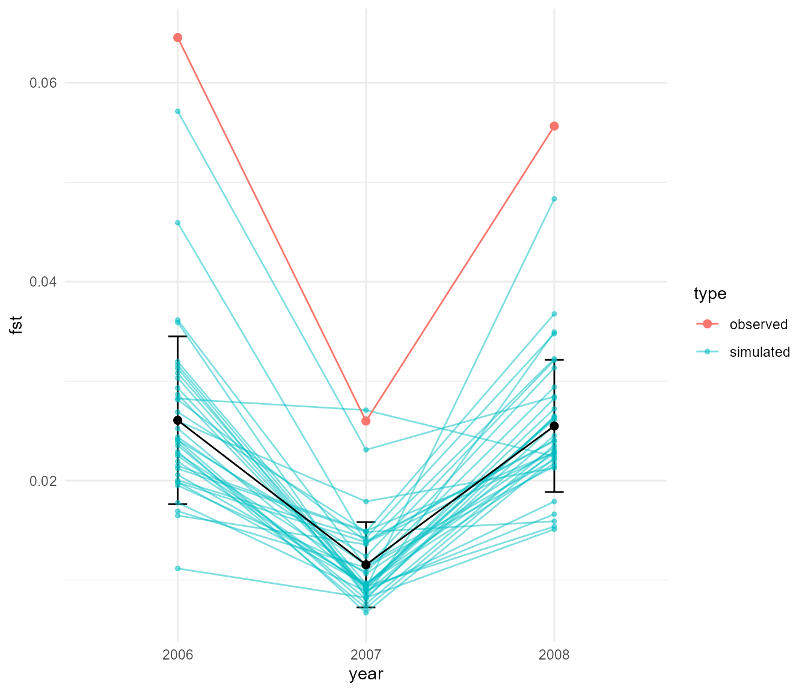
This function plots the means of the pairwise Fst calculated from the simulation along with error bars representing 2 standard deviations around the mean, and the blue lines are each of the 36 replicates (6 temporal times 6 simulation runs). The red dots are the observed data. In this case, the match is not bad, the simulation generates a drop is Fst in 2007, with a rebound in 2008, but overall the Fst values are too low and the rebound is too strong. Let’s try running our simulation again with some of the parameter combinations we explored earlier and see how this plot looks for them!
## set migration rate to 0.5 (maximum migration, e.g. 50% of population switches place)
## population will become panmictic over a certain popsize threshold
fst_samp_2 <- slim_script_render(pop_sim_samp, template = list(migration_rate = 0.5,
selection_strength = 1e-12),
reps = 6)## Warning: Warning: A templated variable was not specified in the template and has been replaced by its default value.
## now run the sim and show plots of results
samp_res_2 <- slim_run(fst_samp_2, throw_error = TRUE,
parallel = TRUE)
plot_fst_comparison(samp_res_2, fst_df)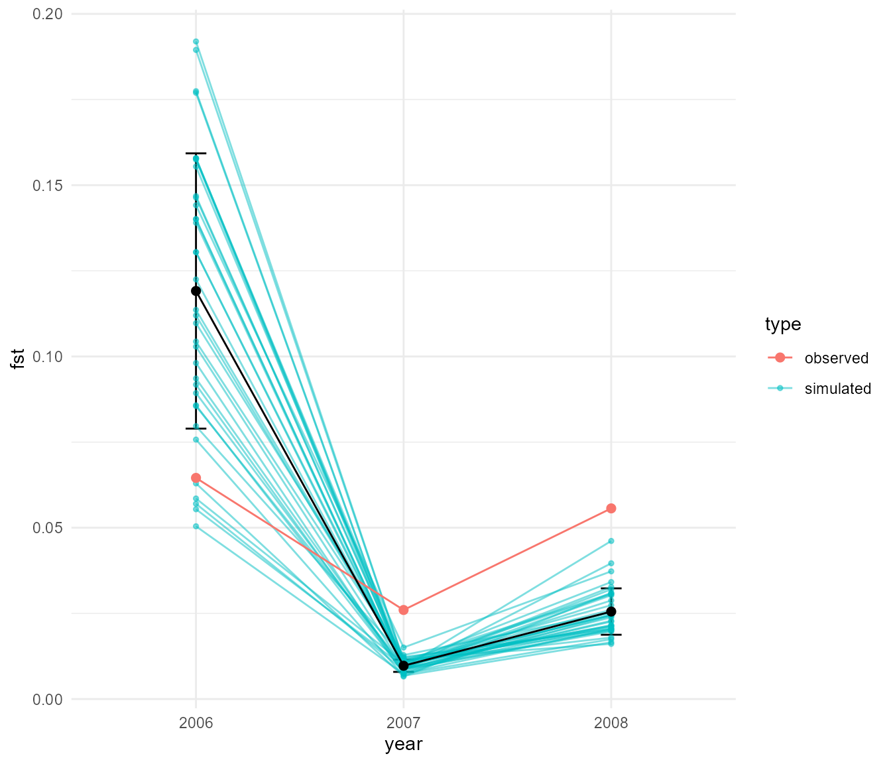
Okay, well that simulation produces Fsts within a similar average range as the observed, but interestingly Fst is too high in 2006 and then too low in 2007 and 2008 during and after the rainfall event. This is something that we couldn’t tell from the plots of Fst over time, which showed fluctuations but did not show the detail of exactly when the fluctuations occurred. Let’s try another set of parameters!
## set migration rate to 0.5 (maximum migration, e.g. 50% of population switches place)
## population is panmictic all the time with abund_threshold = 0,
## now there is stronger selection too
fst_samp_3 <- slim_script_render(pop_sim_samp, template = list(migration_rate = 0.5,
selection_strength = 0.2,
abund_threshold = 0),
reps = 6)## Warning: Warning: A templated variable was not specified in the template and has been replaced by its default value.
## now run the sim and show plots of results
samp_res_3 <- slim_run(fst_samp_3, throw_error = TRUE,
parallel = TRUE)
plot_fst_comparison(samp_res_3, fst_df)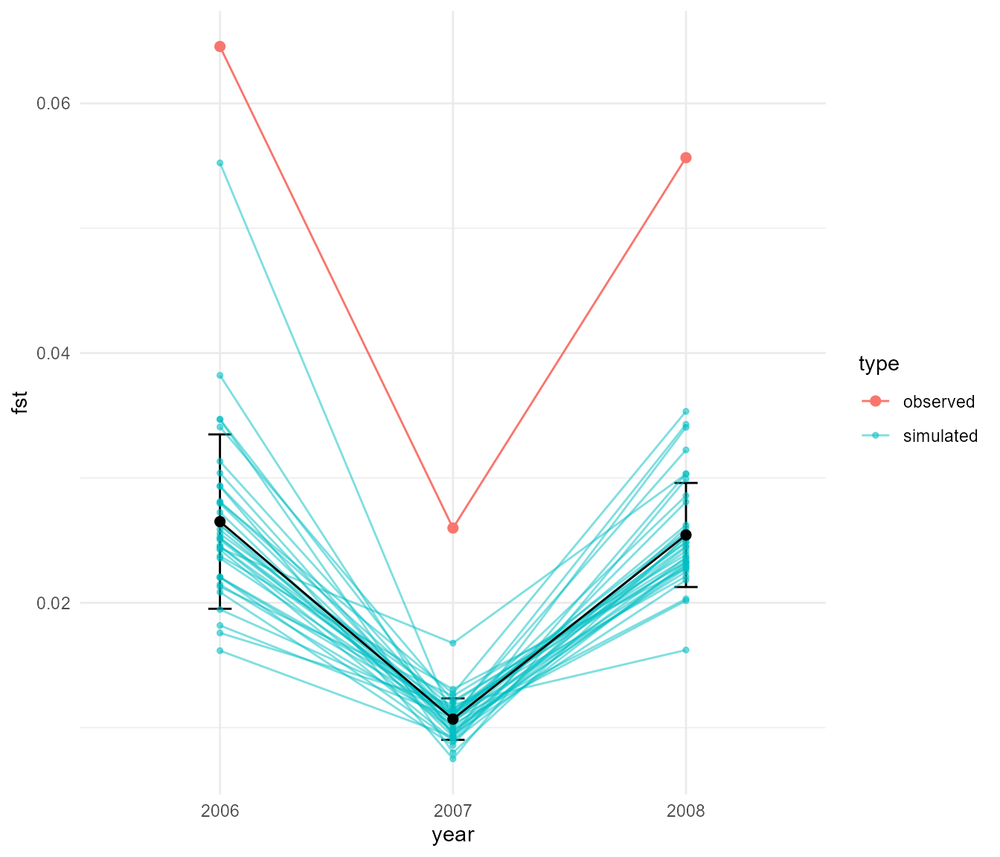
Now the pattern across years is again similar to the real data, though again the rebound is a little too strong and again overall Fst values are too low. To me, the second simulation that was based most strongly on our hypothesis was quite promising. Let’s tweak the parameters of that one slightly to see if we can get a bit better fit.
fst_samp_4 <- slim_script_render(pop_sim_samp, template = list(migration_rate = 0.3,
selection_strength = 1e-12,
abund_threshold = 2),
reps = 6)## Warning: Warning: A templated variable was not specified in the template and has been replaced by its default value.
## now run the sim and show plots of results
samp_res_4 <- slim_run(fst_samp_4, throw_error = TRUE,
parallel = TRUE)
plot_fst_comparison(samp_res_4, fst_df)So that is not much better. So far, we haven’t found a perfect
simulation, but we have discovered that quite a range of different
evolutionary scenarios can create fairly similar patterns. The next step
may be to do some formal fitting of the simulation data to the observed
using a method such as Approximate Bayesian Computation (ABC). This
would be straightforward using slimr, since R already has
good packages for performing ABC with custom simulation code. It may be
the case that for distinguishing the evolutionary forces we are
interested in here that we may need more data, or data of a different
kind. We could also use simulation to further ask, is there anything we
could measure or calculate, besides Fst, from the genomes of
individuals, that could better distinguish multiple evolutionary forces?
I will leave that project up to future work, but hopefully I have
demonstrated the potential of having a tighter integration between data
analysis platforms and simulation software.
Last but not least, this is the session information for this run of the above code. We can only guarantee reproducibility of this document if the session where it is being run matches the following:
## ─ Session info ───────────────────────────────────────────────────────────────
## setting value
## version R version 4.3.2 (2023-10-31 ucrt)
## os Windows 11 x64 (build 22000)
## system x86_64, mingw32
## ui RTerm
## language en
## collate English_Australia.utf8
## ctype English_Australia.utf8
## tz America/New_York
## date 2023-12-18
## pandoc 3.1.1 @ C:/Program Files/RStudio/resources/app/bin/quarto/bin/tools/ (via rmarkdown)
##
## ─ Packages ───────────────────────────────────────────────────────────────────
## package * version date (UTC) lib source
## ade4 * 1.7-22 2023-02-06 [2] CRAN (R 4.3.2)
## adegenet * 2.1.10 2023-01-26 [2] CRAN (R 4.3.2)
## ape 5.7-1 2023-03-13 [2] CRAN (R 4.3.2)
## base64enc 0.1-3 2015-07-28 [2] CRAN (R 4.3.1)
## bit 4.0.5 2022-11-15 [2] CRAN (R 4.3.2)
## bit64 4.0.5 2020-08-30 [2] CRAN (R 4.3.2)
## brew 1.0-8 2022-09-29 [2] CRAN (R 4.3.2)
## bslib 0.5.1 2023-08-11 [2] CRAN (R 4.3.2)
## cachem 1.0.8 2023-05-01 [2] CRAN (R 4.3.2)
## calibrate 1.7.7 2020-06-19 [2] CRAN (R 4.3.2)
## class 7.3-22 2023-05-03 [2] CRAN (R 4.3.2)
## classInt 0.4-10 2023-09-05 [2] CRAN (R 4.3.2)
## cli 3.6.1 2023-03-23 [2] CRAN (R 4.3.2)
## cluster 2.1.4 2022-08-22 [2] CRAN (R 4.3.2)
## codetools 0.2-19 2023-02-01 [2] CRAN (R 4.3.2)
## colorspace 2.1-0 2023-01-23 [2] CRAN (R 4.3.2)
## combinat 0.0-8 2012-10-29 [2] CRAN (R 4.3.1)
## conflicted * 1.2.0 2023-02-01 [2] CRAN (R 4.3.2)
## crayon 1.5.2 2022-09-29 [2] CRAN (R 4.3.2)
## crosstalk 1.2.0 2021-11-04 [2] CRAN (R 4.3.2)
## dartR * 2.9.7 2023-06-07 [2] CRAN (R 4.3.2)
## dartR.data * 1.0.2 2022-11-16 [2] CRAN (R 4.3.2)
## data.table 1.14.8 2023-02-17 [2] CRAN (R 4.3.2)
## DBI 1.1.3 2022-06-18 [2] CRAN (R 4.3.2)
## desc 1.4.2 2022-09-08 [2] CRAN (R 4.3.2)
## digest 0.6.33 2023-07-07 [2] CRAN (R 4.3.2)
## directlabels * 2023.8.25 2023-09-01 [2] CRAN (R 4.3.2)
## dismo 1.3-14 2023-05-21 [2] CRAN (R 4.3.2)
## doParallel 1.0.17 2022-02-07 [2] CRAN (R 4.3.2)
## dotCall64 1.1-0 2023-10-17 [2] CRAN (R 4.3.2)
## dplyr * 1.1.3 2023-09-03 [2] CRAN (R 4.3.2)
## e1071 1.7-13 2023-02-01 [2] CRAN (R 4.3.2)
## ellipsis 0.3.2 2021-04-29 [2] CRAN (R 4.3.2)
## evaluate 0.23 2023-11-01 [2] CRAN (R 4.3.2)
## fansi 1.0.5 2023-10-08 [2] CRAN (R 4.3.2)
## farver 2.1.1 2022-07-06 [2] CRAN (R 4.3.2)
## fastmap 1.1.1 2023-02-24 [2] CRAN (R 4.3.2)
## fields 15.2 2023-08-17 [2] CRAN (R 4.3.2)
## foreach 1.5.2 2022-02-02 [2] CRAN (R 4.3.2)
## fs 1.6.3 2023-07-20 [2] CRAN (R 4.3.2)
## furrr * 0.3.1 2022-08-15 [2] CRAN (R 4.3.2)
## future * 1.33.0 2023-07-01 [2] CRAN (R 4.3.2)
## gap 1.5-3 2023-08-26 [2] CRAN (R 4.3.2)
## gap.datasets 0.0.6 2023-08-25 [2] CRAN (R 4.3.1)
## gdata 3.0.0 2023-10-16 [2] CRAN (R 4.3.2)
## gdistance 1.6.4 2023-06-19 [2] CRAN (R 4.3.2)
## gdsfmt * 1.38.0 2023-10-24 [2] Bioconductor
## generics 0.1.3 2022-07-05 [2] CRAN (R 4.3.2)
## genetics 1.3.8.1.3 2021-03-01 [2] CRAN (R 4.3.2)
## GGally 2.1.2 2021-06-21 [2] CRAN (R 4.3.2)
## gganimate * 1.0.8 2022-09-08 [2] CRAN (R 4.3.2)
## ggforce * 0.4.1 2022-10-04 [2] CRAN (R 4.3.2)
## ggplot2 * 3.4.4 2023-10-12 [2] CRAN (R 4.3.2)
## gifski 1.12.0-2 2023-08-12 [2] CRAN (R 4.3.2)
## globals 0.16.2 2022-11-21 [2] CRAN (R 4.3.1)
## glue 1.6.2 2022-02-24 [2] CRAN (R 4.3.2)
## gridExtra 2.3 2017-09-09 [2] CRAN (R 4.3.2)
## gtable 0.3.4 2023-08-21 [2] CRAN (R 4.3.2)
## gtools 3.9.4 2022-11-27 [2] CRAN (R 4.3.2)
## here * 1.0.1 2020-12-13 [2] CRAN (R 4.3.2)
## highr 0.10 2022-12-22 [2] CRAN (R 4.3.2)
## hms 1.1.3 2023-03-21 [2] CRAN (R 4.3.2)
## htmltools 0.5.7 2023-11-03 [2] CRAN (R 4.3.2)
## htmlwidgets 1.6.2 2023-03-17 [2] CRAN (R 4.3.2)
## httpuv 1.6.12 2023-10-23 [2] CRAN (R 4.3.2)
## igraph 1.5.1 2023-08-10 [2] CRAN (R 4.3.2)
## iterators 1.0.14 2022-02-05 [2] CRAN (R 4.3.2)
## jquerylib 0.1.4 2021-04-26 [2] CRAN (R 4.3.2)
## jsonlite 1.8.7 2023-06-29 [2] CRAN (R 4.3.2)
## KernSmooth 2.23-22 2023-07-10 [2] CRAN (R 4.3.2)
## knitr 1.45 2023-10-30 [2] CRAN (R 4.3.2)
## labeling 0.4.3 2023-08-29 [2] CRAN (R 4.3.1)
## later 1.3.1 2023-05-02 [2] CRAN (R 4.3.2)
## lattice 0.21-9 2023-10-01 [2] CRAN (R 4.3.2)
## leafem 0.2.3 2023-09-17 [2] CRAN (R 4.3.2)
## leaflet 2.2.1 2023-11-13 [2] CRAN (R 4.3.2)
## leaflet.providers 2.0.0 2023-10-17 [2] CRAN (R 4.3.2)
## leafpop 0.1.0 2021-05-22 [2] CRAN (R 4.3.2)
## lifecycle 1.0.4 2023-11-07 [2] CRAN (R 4.3.2)
## listenv 0.9.0 2022-12-16 [2] CRAN (R 4.3.2)
## lubridate * 1.9.3 2023-09-27 [2] CRAN (R 4.3.2)
## magrittr 2.0.3 2022-03-30 [2] CRAN (R 4.3.2)
## maps 3.4.1.1 2023-11-03 [2] CRAN (R 4.3.2)
## mapview * 2.11.2 2023-10-13 [2] CRAN (R 4.3.2)
## MASS 7.3-60 2023-05-04 [2] CRAN (R 4.3.2)
## Matrix 1.6-1.1 2023-09-18 [2] CRAN (R 4.3.2)
## memoise 2.0.1 2021-11-26 [2] CRAN (R 4.3.2)
## mgcv 1.9-0 2023-07-11 [2] CRAN (R 4.3.2)
## mime 0.12 2021-09-28 [2] CRAN (R 4.3.1)
## mmod 1.3.3 2017-04-06 [2] CRAN (R 4.3.2)
## munsell 0.5.0 2018-06-12 [2] CRAN (R 4.3.2)
## mvtnorm 1.2-3 2023-08-25 [2] CRAN (R 4.3.2)
## nlme 3.1-163 2023-08-09 [2] CRAN (R 4.3.2)
## parallelly 1.36.0 2023-05-26 [2] CRAN (R 4.3.1)
## patchwork * 1.1.3 2023-08-14 [2] CRAN (R 4.3.2)
## pegas 1.2 2023-02-23 [2] CRAN (R 4.3.2)
## permute 0.9-7 2022-01-27 [2] CRAN (R 4.3.2)
## pillar 1.9.0 2023-03-22 [2] CRAN (R 4.3.2)
## pkgconfig 2.0.3 2019-09-22 [2] CRAN (R 4.3.2)
## pkgdown 2.0.7 2022-12-14 [2] CRAN (R 4.3.2)
## plyr 1.8.9 2023-10-02 [2] CRAN (R 4.3.2)
## png 0.1-8 2022-11-29 [2] CRAN (R 4.3.1)
## polyclip 1.10-6 2023-09-27 [2] CRAN (R 4.3.1)
## PopGenReport 3.1 2023-10-11 [2] CRAN (R 4.3.2)
## prettycode 1.1.0 2019-12-16 [2] CRAN (R 4.3.2)
## prettyunits 1.2.0 2023-09-24 [2] CRAN (R 4.3.2)
## processx 3.8.2 2023-06-30 [2] CRAN (R 4.3.2)
## progress 1.2.2 2019-05-16 [2] CRAN (R 4.3.2)
## promises 1.2.1 2023-08-10 [2] CRAN (R 4.3.2)
## proxy 0.4-27 2022-06-09 [2] CRAN (R 4.3.2)
## ps 1.7.5 2023-04-18 [2] CRAN (R 4.3.2)
## purrr * 1.0.2 2023-08-10 [2] CRAN (R 4.3.2)
## quadprog 1.5-8 2019-11-20 [2] CRAN (R 4.3.1)
## R.methodsS3 1.8.2 2022-06-13 [2] CRAN (R 4.3.1)
## R.oo 1.25.0 2022-06-12 [2] CRAN (R 4.3.1)
## R.utils 2.12.2 2022-11-11 [2] CRAN (R 4.3.2)
## R6 2.5.1 2021-08-19 [2] CRAN (R 4.3.2)
## ragg 1.2.6 2023-10-10 [2] CRAN (R 4.3.2)
## raster 3.6-26 2023-10-14 [2] CRAN (R 4.3.2)
## rbibutils 2.2.16 2023-10-25 [2] CRAN (R 4.3.2)
## RColorBrewer 1.1-3 2022-04-03 [2] CRAN (R 4.3.1)
## Rcpp 1.0.11 2023-07-06 [2] CRAN (R 4.3.2)
## Rdpack 2.6 2023-11-08 [2] CRAN (R 4.3.2)
## readr * 2.1.4 2023-02-10 [2] CRAN (R 4.3.2)
## reshape 0.8.9 2022-04-12 [2] CRAN (R 4.3.2)
## reshape2 1.4.4 2020-04-09 [2] CRAN (R 4.3.2)
## RgoogleMaps 1.5.1 2023-11-06 [2] CRAN (R 4.3.2)
## rlang 1.1.2 2023-11-04 [2] CRAN (R 4.3.2)
## rmarkdown 2.25 2023-09-18 [2] CRAN (R 4.3.2)
## rprojroot 2.0.4 2023-11-05 [2] CRAN (R 4.3.2)
## rstudioapi 0.15.0 2023-07-07 [2] CRAN (R 4.3.2)
## sass 0.4.7 2023-07-15 [2] CRAN (R 4.3.2)
## satellite 1.0.4 2021-10-12 [2] CRAN (R 4.3.2)
## scales 1.2.1 2022-08-20 [2] CRAN (R 4.3.2)
## seqinr 4.2-30 2023-04-05 [2] CRAN (R 4.3.2)
## sessioninfo * 1.2.2 2021-12-06 [2] CRAN (R 4.3.2)
## sf * 1.0-14 2023-07-11 [2] CRAN (R 4.3.2)
## shiny 1.7.5.1 2023-10-14 [2] CRAN (R 4.3.2)
## slimr * 0.4.0 2023-12-18 [1] local
## SNPRelate * 1.36.0 2023-10-24 [2] Bioconductor
## sp 2.1-1 2023-10-16 [2] CRAN (R 4.3.2)
## spam 2.10-0 2023-10-23 [2] CRAN (R 4.3.2)
## StAMPP 1.6.3 2021-08-08 [2] CRAN (R 4.3.2)
## stringi 1.8.1 2023-11-13 [2] CRAN (R 4.3.2)
## stringr * 1.5.1 2023-11-14 [2] CRAN (R 4.3.2)
## svglite 2.1.2 2023-10-11 [2] CRAN (R 4.3.2)
## systemfonts 1.0.5 2023-10-09 [2] CRAN (R 4.3.2)
## terra 1.7-55 2023-10-13 [2] CRAN (R 4.3.2)
## textshaping 0.3.7 2023-10-09 [2] CRAN (R 4.3.2)
## tibble * 3.2.1 2023-03-20 [2] CRAN (R 4.3.2)
## tidyr * 1.3.0 2023-01-24 [2] CRAN (R 4.3.2)
## tidyselect 1.2.0 2022-10-10 [2] CRAN (R 4.3.2)
## timechange 0.2.0 2023-01-11 [2] CRAN (R 4.3.2)
## tweenr 2.0.2 2022-09-06 [2] CRAN (R 4.3.2)
## tzdb 0.4.0 2023-05-12 [2] CRAN (R 4.3.2)
## units 0.8-4 2023-09-13 [2] CRAN (R 4.3.2)
## utf8 1.2.4 2023-10-22 [2] CRAN (R 4.3.2)
## uuid 1.1-1 2023-08-17 [2] CRAN (R 4.3.1)
## vctrs 0.6.4 2023-10-12 [2] CRAN (R 4.3.2)
## vegan 2.6-4 2022-10-11 [2] CRAN (R 4.3.2)
## viridisLite 0.4.2 2023-05-02 [2] CRAN (R 4.3.2)
## vroom 1.6.4 2023-10-02 [2] CRAN (R 4.3.2)
## withr 2.5.2 2023-10-30 [2] CRAN (R 4.3.2)
## xfun 0.41 2023-11-01 [2] CRAN (R 4.3.2)
## xtable 1.8-4 2019-04-21 [2] CRAN (R 4.3.2)
## yaml 2.3.7 2023-01-23 [2] CRAN (R 4.3.2)
## zeallot 0.1.0 2018-01-28 [2] CRAN (R 4.3.2)
##
## [1] F:/Rtemp/Rtmps3TqGx/temp_libpath5eb8694e531a
## [2] C:/R/R-4.3.2/library
##
## ──────────────────────────────────────────────────────────────────────────────